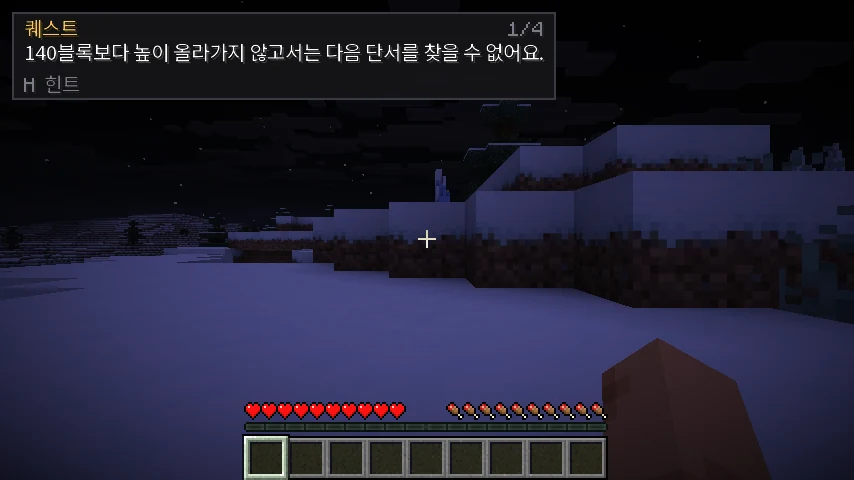
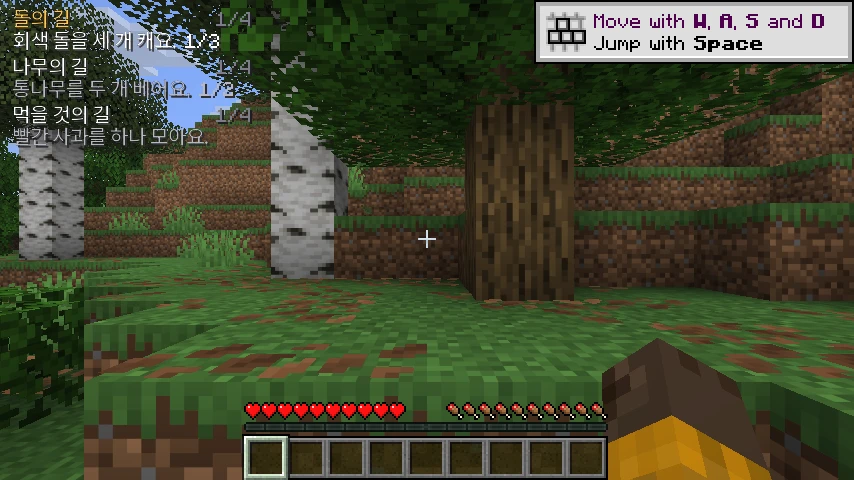
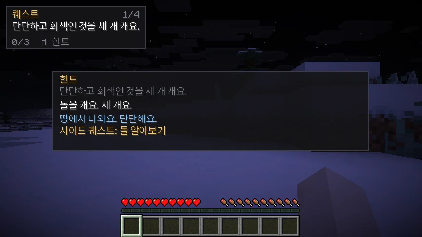
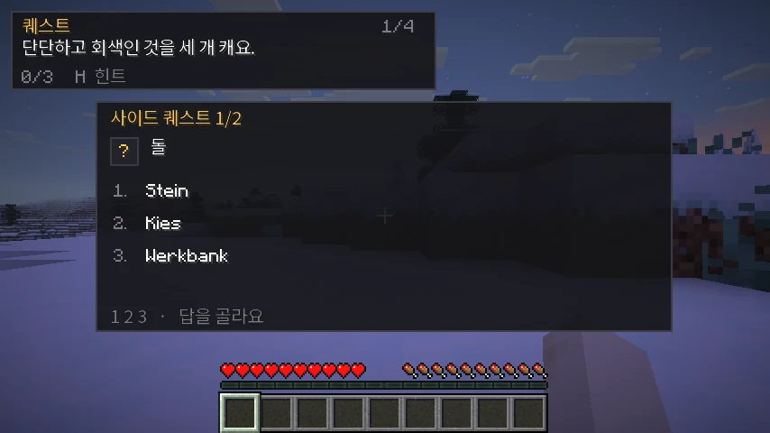
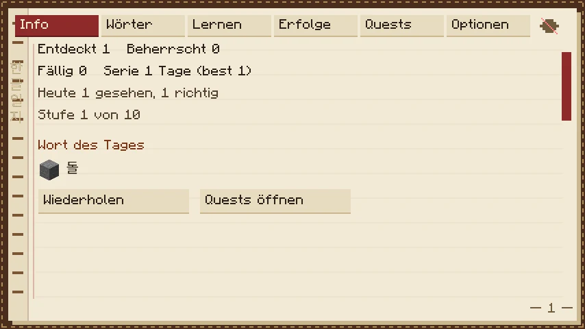
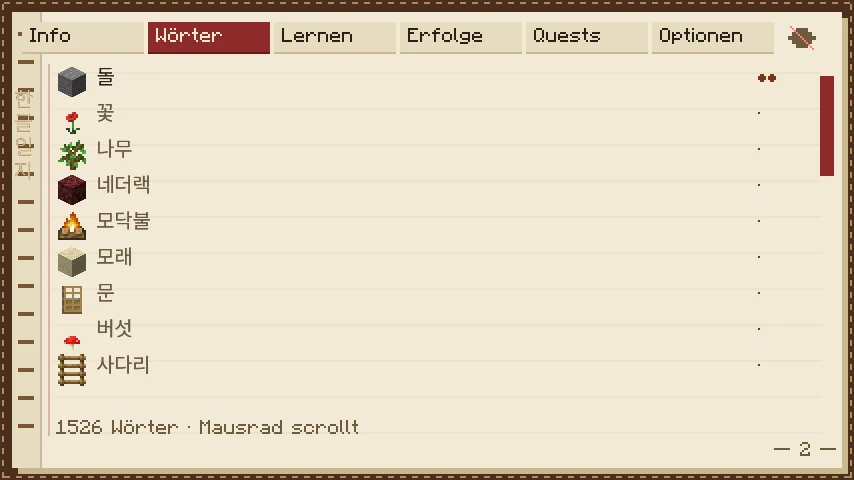
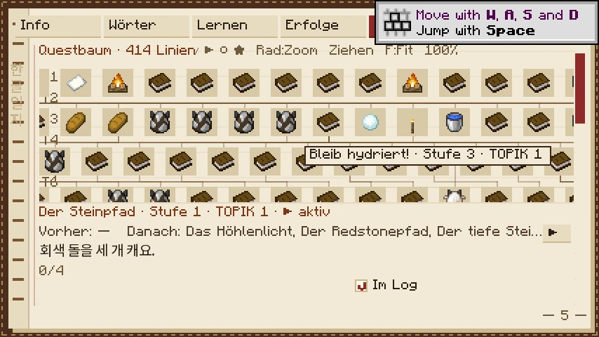

Hangul Quest
Learn Korean by playing Minecraft.
Hangul Quest is a client-side Fabric mod for Minecraft 26.3. It turns the world into a language course: a Korean sentence appears in the corner of your screen, you work out what it asks, and the game verifies that you did it. When a word blocks you, the mod explains it in easier Korean and makes you practise it before the quest continues.
There is no chat, no pop-up quiz during a fight, no server component and no network traffic. It works in single-player and on any server, with or without other players.

What is in it
- 422 questlines and 1,661 steps, arranged in a tree 22 levels deep, with 31 kinds of goal. Over 200 trails were
rebuilt around small themes (the village, the kitchen, the smithy, the harbour, animals, colours) and recycle words
on purpose. The Korean gets harder as you go deeper through six levels, each with one instruction ending:
-아/어요, then-(으)세요, then-아/어야 해요. A new construction shows a rule card once. - A quest log instead of a single tracker: the HUD lists up to four quests with their Korean objective, their conditions and a live count (three regular slots and one for the place you are in). The game fills the slots for you and picks the next quest when you finish one; tick quests in the journal to choose yourself, or switch “Pick quests automatically” off. Only tracked quests advance.
- Windows that wait for you. Hints, rule cards and banners stay until you press the hint key (
H), one window per press, and closing one is never a hint. - A hint that teaches.
Hrestates the task in level-1 Korean and explains the blocking word, then starts a two-question sidequest on it. The original quest waits until you have answered both. - A journal (
K) drawn as a worn notebook: your dictionary, due words, achievements, a quest tree that shows what matters now, a grammar book, stories and the settings. - Real spaced repetition (FSRS-6), with four-option cards, recall, syllable tiles and typed answers on a built-in Korean keyboard for words you know well.
- Vocabulary from three places: about 1,300 concepts (hand-written ones and one generated entry per rarer object), the game’s own Korean names, and your own words imported from Lute.
- Four interface languages: English, German, Spanish and French. The quest itself is always Korean.
- Checked Korean. Every Korean line passes a linter, and a part of it has been read by two AI reviewers. No line has been approved by a native speaker yet; you can help.
- Content as data. Questlines are JSON files, re-read every two seconds, so you can write your own without touching Java or restarting the game.
How to read this guide
| If you want to … | Read |
|---|---|
| install the mod and start playing today | Installing, Playing |
| understand hints, the sidequest and the review system | Hints and sidequests, Review, streak and achievements |
| write your own questlines | Authoring guide, Attribute reference |
| see what content ships | The quest tree |
| fix something that broke | Troubleshooting |
| know what the mod stores | Files and backups, Privacy |
A quest, in one sentence
“Place a campfire on the beach.” — the place is part of the sentence, the mod checks the block and the biome, and the tracker answers “why not yet?” with the live status underneath. That is the whole design: the Korean is the interface.
Status
Version 3.0.0 (release candidates until it is final), for Minecraft 26.3 with Fabric Loader 0.19.5+ and Fabric API 0.162.0+26.3 on Java 25. The interface follows your game language (English, German, Spanish, French); the quest text is Korean, with an optional line in your language. See Compatibility for what is deliberately out of scope.
Installing
What you need
| Minecraft | Java Edition 26.3 |
| Mod loader | Fabric Loader 0.19.5 or newer |
| Java | 25 (the version 26.3 already runs on) |
| Fabric API | 0.162.0+26.3 or newer, for the same game version |
Hangul Quest is a client mod. Install it in your own mods folder, never on a server; it never
sends a packet, so a server without it behaves exactly the same.
Before you start: reading Hangul
Hangul Quest assumes you can already read Hangul, the Korean alphabet. It teaches words and
grammar, not the alphabet. Most people learn Hangul in a few hours. The first time you join a world a
short welcome screen asks whether you can read 고양이가 나무 위에 있어요.; if you cannot yet, it
lists free lessons. You can skip it, ask to be reminded once, or switch it off for good, and it never
blocks a quest. Open it again any time from the journal’s Info tab (About reading Hangul).
Free ways to learn Hangul:
- How to Study Korean, Unit 0: Learn How to Read Hangul (English)
- KoreanClass101: Learn the Korean Alphabet (Hangul) (English; the lessons are readable without an account, the PDF chart needs a free one)
- Ryan Estrada: Learn to Read Korean in 15 Minutes (English, a short comic)
- Koreanischkurs: Einführung in Hangeul (Deutsch)
Steps
- Install Fabric. Run the Fabric installer for Minecraft 26.3 and start the game once with the new profile so the folder exists.
- Download the mod. Take
hangulquest-<version>.jarfrom the releases page. Release candidates (3.0.0-rc.N) are marked as pre-releases and do not show up under “latest”. - Download Fabric API for 26.3 from Modrinth or CurseForge.
- Copy both jars into your
modsfolder:- Windows:
%appdata%\.minecraft\mods - Linux:
~/.minecraft/mods(or~/.var/app/com.mojang.Minecraft/.minecraft/modsfor the Flatpak) - macOS:
~/Library/Application Support/minecraft/mods
- Windows:
- Start Minecraft with the Fabric profile and enter any world. The first questline starts by
itself;
Kopens the journal,Hshows a hint.
Checking the download
Each release page carries a SHA256SUMS file with the hash of every asset:
sha256sum -c SHA256SUMS
# hangulquest-<version>.jar: OK
First five minutes
- The quest log sits in the top-left corner. The game picks up to four quests for you (three regular ones and one
that follows where you are); each shows one Korean sentence, a progress bar where the goal counts something, and a status line that says what is still
missing (
지금 낮 · 밤 필요— “it is day now, night is needed”).Vmoves the highlight;Hhelps with the highlighted quest. - Press
Hwhenever a word is unknown. You get the same task in easier Korean, an explanation of the word, and a two-question sidequest. Finishing it brings the quest back. When a window is open (a hint, a rule card, a banner),Hcloses it first; windows stay until you do. - Press
Kfor the journal. The Quests tab shows the whole tree: what you finished, what is open and what the locked branches are waiting for. - The interface follows your Minecraft language (English, German, Spanish or French; anything else gets English); Settings → Language switches it explicitly.
- If you want a translation line under each quest, switch on Translations in quests in the same tab. It is off by default: the quest itself is always Korean, so the Korean is what you learn to read.
Updating
Replace the jar in mods with the new one. Progress lives in config/hangulquest/ and survives an
update; the mod backs the file up before it migrates a format. If a new version needs a newer
Minecraft or Fabric API, the release notes say so.
From 2.x to 3.0: progress is converted when you first start the game. It now lives per Minecraft account in
config/hangulquest/profiles/<account>/; your old progress.json is copied there and never changed or deleted. To
roll back, put the 2.1.0 jar back and delete config/hangulquest/config.json; the CHANGELOG has the full notes. Copy
the config/hangulquest/ folder before updating if you want to be sure.
Uninstalling
Delete the jar. Your progress, settings and imported vocabulary stay in config/hangulquest/ — delete
that folder too if you want a clean slate. Nothing was ever written outside it.
Compatibility
- Minecraft 26.3 only. The mod is built against named 26.3 classes; it will not load on 1.21.x or on a future 26.4 without changes.
- Client-side. It works on servers that do not have the mod, in single-player and in LAN worlds. Other players see nothing.
- Other client mods. It draws its own HUD and journal and does not replace vanilla screens, so it coexists with HUD mods; if two trackers overlap, move the quest tracker to another corner in the journal’s options.
- Languages. English, German, Spanish and French interfaces; a text a language lacks is shown in English. Spanish and French cover only part of the quest text so far.
- Voices. Pronunciation audio is an optional separate resource pack (“Hangul Quest Voices”); without it the mod is silent.
- Not in scope: romanisation (Hangul is a prerequisite), speech recognition, and anything that would need the server’s cooperation.
Playing
The quest log
When quests are tracked, the top-left corner shows a quest log: no panel, just shadowed text on the world, two short lines per quest.

Each quest reads:
| Part | Example | Meaning |
|---|---|---|
| title | 돌의 길 | the trail’s Korean title; the highlighted quest is gold |
| step | 1/4 | which step of the trail you are on, finales included |
| objective | 회색 돌을 세 개 캐요. 1/3 | the current Korean sentence, with the count of the goal right after it |
| status | 지금 낮 · 밤 필요 | only when a condition is missing — time, weather, biome, dimension, a mob nearby |
Counts are inline (1/3) instead of a bar, and there is no background box, so the log stays small even
with several quests open.
The status line is generated from the goal, so it always answers the question the sentence raises:
| What you see | What it means |
|---|---|
1/3 | one of three stone broken, collected or placed — depending on the goal |
지금 낮 · 밤 필요 | it is day; the step needs night |
Y 62 / 140 위 | you are at Y 62 and the goal wants Y 140 or higher |
지금 평원 · 산 필요 | you are standing in plains, the step wants a mountain biome |
가까이에 좀비 필요 | no zombie within range yet |
보는 중 … 62% | keep looking at the block or mob a little longer |
Every condition of a step is spoken inside the sentence itself — 해변에서 모닥불을 놓아요., not just
모닥불을 놓아요. — so the text and the check can never disagree.
What is in the log
The game keeps the log filled for you. It holds up to four quests: three regular ones that fit the start of the game (wood, stone, food) and a fourth, situational slot that follows where you are (a snow trail in the snow, a cave trail underground). When you finish one, the next one follows. A message says when the game has picked quests for you.
You can still curate it. In the journal’s Quests tab, select a trail and tick In log in its detail card: the quest appears in the HUD and starts advancing.
- Quests you tick yourself are never replaced by the game. A quest you take out stays out for 30 minutes of play.
- Only tracked quests advance. An untracked quest keeps its saved step, counter and hints, but nothing about it is checked against the world, so a quest can never complete behind your back while you work on a different one.
Vmoves the highlight. The list keeps its order, only the gold title moves, soVwalks through every tracked quest and wraps around. Hints (H), the sidequest and the follow-up chain work on the highlighted quest only.- Finishing the highlighted quest starts or offers its successor. Finishing any other tracked quest shows a banner and leaves the highlight alone.
- Settings → Pick quests automatically switches the game’s choice off; then the log holds only what you tick.
The detail card also has a Focus button for a quest that is in the log but not highlighted.
How many rows the HUD draws is questTrackerRows in config/hangulquest/config.json (1 to 6, default 4).
Windows stay until you close them
Hints, rule cards, culture notes, word cards, banners, the quiz prompt, the next-quest popup and the completion
cards no longer disappear on a timer. Each shows its key ([H] 닫기 · close); one press of H closes exactly one
window, the top one. If more are waiting, a “+N” badge says how many. Closing a window is never a hint: the press
does not mark the step as helped, start a sidequest or change the grading. No window covers the crosshair or the
hotbar. If you prefer the old behaviour, switch Settings → Auto-close windows on.
A step
- Read the sentence.
- Do it. The mod watches the world locally: blocks you break or place, items you gain or eat, what you look at long enough, the biome, dimension and altitude you are in, right-clicks and interactions.
- When the check passes, a card appears with the next clue and that quest’s row moves on.
Nothing is ever sent to the server, and nothing can be “cheated” in a way that matters: the mod trusts your client because the only person you could cheat is yourself.
After a step: the finale
Every trail ends with a ritual finale: the same goal-and-condition rules, but always something you can do in any world — light a torch on a mountain at night, ring a bell at dawn, place a campfire on a beach. That is deliberate. No trail ever asks for a structure, a chest, a coordinate or a rare biome, so no trail can be unfinishable because of world generation.
Finishing the finale gives the big card: the trail’s Korean title, the closing line, the translation line if you enabled it, the badge, a fanfare, a level-up sound and fireworks. The badge stays in the journal.
What happens next
- If exactly one follow-up trail is unlocked, it starts by itself.
- If several are, a card offers up to five of them. Press
1–5; if you do nothing, the first one starts after 60 seconds. - If the next trail is still locked (it wants another parent, or more known words), the mod starts the missing prerequisite instead, so you are never left without a quest.
- Abandoning is allowed and costs nothing. The trail is paused where you left it — step, partial counter,
hint state and sidequest — and resumes exactly there when you come back. Progress in the journal shows
as
2/4.
The HUD
The vanilla HUD stays as it is. Hangul Quest adds three non-modal elements:
- the quest log (top-left by default),
- the word card when you look at a block or mob that is in your vocabulary,
- windows and celebration cards (hints, rule cards, banners, the quiz prompt), which never capture input.
All of them can be moved or switched off in the journal’s options; F8 hides the quest HUD entirely
while you build.
Keys
| Key | Action | Change it under |
|---|---|---|
K | Open the journal | Controls → Key Binds → 한글 탐험 |
H | Close the top window; otherwise show the hint / start the sidequest | same |
J | Review due words now | same |
R | Answer a waiting review prompt | same |
V | Move the highlight through the quest log | same |
F8 | Toggle the quest HUD | same |
1–4 | Answer a quiz or sidequest question | same |
1–5 | Pick the next trail | same |
Esc | Close the journal or a card | — |
Playing in a group
The mod is per-player and invisible to everyone else. On a server, each player can run it independently; there is no shared state and no server-side component. If you play with someone who also uses it, you will simply each have your own quest log.
A sensible first session
Do the first branch for ten minutes with the hint key, then turn the hint off for one trail and see how far you get. The vocabulary you keep meeting — stone, wood, torch, bread — is the vocabulary the early tree is built from, and it reappears in later trails on purpose.
Hints and sidequests
The hint is the heart of the mod. It is not a translation: it is the same task said in easier Korean, plus one sentence about the word that is blocking you. And it does not let you continue until you have spent thirty seconds with that word.

H works on the highlighted quest in the log — press V until the quest you want help with is the
gold one, then ask.
What H gives you
- The same goal, at level 1. A late trail might say
돌을 세 개 캐야 해요.— pressingHgives돌을 캐요. 세 개요.The counters stay, the conditions stay spoken, the grammar drops to the politest form. Hints never leave level 1. - The blocking word explained, in Korean.
돌 = 땅에서 나와요. 단단해요.— “comes out of the ground, is hard”. Written with tier-1 vocabulary on purpose, and validated as Hangul-only. - A sidequest. Two questions about that word:
- Korean word + icon → pick the meaning in your language,
- the meaning + icon → pick the Korean word.
The sidequest

- The original step is frozen while the sidequest runs. You cannot accidentally finish a quest you did not understand.
- A wrong answer does not punish you. It shows the word card, reduces the choices to two and lets you try again.
- Practice — sidequests and ambient word cards — is exposure, not an exam: it never counts against a word’s schedule, so guessing costs nothing.
- Both questions answered and the original step returns with a short Korean confirmation and a
사이드 퀘스트 완료!card.
When you already know the word
The sidequest is skipped and you just get the hint, if the word is:
- mastered in the mod, or
- marked known in Lute (status 99).
You asked for a hint, not a lesson — the mod respects that.
Closing a hint
A hint is a window, and windows stay until you close them. The first press of H shows the hint; once it is open,
the next press of H only closes it. That press is not a hint request and changes nothing about the step. If several
windows are waiting, each press closes one and a “+N” badge counts the rest.
One hint per step
hintUsed is stored per step. Pressing H again re-shows the hint instead of starting a second
sidequest, and it survives a restart. Abandoning a trail clears it, because the trail starts over.
The no-spoiler rule
Quizzes and sidequests never show the item icon before you answer. They draw a neutral ? tile, and
the icon only appears on the result card. The ambient word card — the one that appears when you look at
something — does show icons, because that card is teaching, not testing.
This matters more than it sounds: with the icon visible, 돌 in a multiple-choice list is a picture
puzzle, not a reading exercise.
Translations in quests
By default the quest text is Korean only: tracker, step cards, sidequest, finale. The journal’s Settings tab has Translations in quests, which adds one line under each Korean one in the interface language (English, German, Spanish or French). Turn it on for the first week, then off; the point is to stop needing it.
The danger of overuse: if you leave the translation line on, your eyes will read it first. The mod cannot stop you, but the hint key is the intended crutch, and it is a slower one.
Reading the hint like a teacher
- Try the quest sentence for ten seconds before pressing
H. Even a wrong guess primes the word. - If the hint’s explanation itself contains a word you do not know, look it up in the journal’s dictionary — descriptions are written with early-tree vocabulary, so this should be rare.
- After the sidequest, say the word out loud once. The mod cannot hear you; your brain can.
Next: the journal is where all of this is recorded.
The journal
K opens the journal. It is not a vanilla screen with a book texture: the mod draws a leather cover,
a sewn spine, a ribbon, a cream page with ruled lines and a flat ink font, so Hangul stays crisp at
small GUI scales.

Eight tabs, switched with the row at the top:
| Tab | What is on it |
|---|---|
| Info | words discovered and mastered, due today, streak, level, the word of the day, “About reading Hangul”, and buttons to review or open the quest list |
| Words | the dictionary: every word you have met, with Korean, the meaning in your language, status and origin; Sino-Korean families and homophone warnings |
| Study | due words as cards, plus the review trail |
| Achievements | the fifteen achievements with progress |
| Quests | the trail tree and the detail card of the selected trail |
| Grammar | the constructions you have met, with their rule cards |
| Books | graded stories and culture notes |
| Settings | language, HUD, windows, quest picking, new words per day, retention, sound, the quest folder |
Info
The dashboard. Counters are deliberately plain: discovered (met at least once), mastered (recalled on three study days, with a stable card), due (now), the streak with your best streak, today’s reviews and the number of correct answers. Review starts a review, Open quests jumps to the tree. About reading Hangul reopens the welcome screen.
Words
A full-text list of the vocabulary the mod knows: Korean word, meaning, status, and where the word came from:
- curated: a concept from
concepts.json, with a hand-written easy-Korean description, - vanilla: an item, block, entity or biome name taken from the game’s language files,
- lute: imported from your Lute export.
The mouse wheel scrolls, the search field filters by Korean or by meaning. Words you have not met yet are not shown, so the list is a record of your own journey rather than a dictionary dump.

Study
Due words, one card at a time. The kind of card depends on the word: a four-option choice, a recall you grade yourself, syllable tiles, and for words that are already stable a typed answer on a built-in 두벌식 keyboard (Settings → Typed cards turns that off). Answer honestly: the schedule is FSRS-6, and a wrong answer brings the word back soon.
The review trail (복습의 길) is the same words as a quest: it is generated from today’s due words and changes daily. Use it when a card session feels too abstract.
Achievements
Fifteen achievements across vocabulary, mastery, reviews, streak, animals, blocks, questlines and sidequests. They unlock silently when their condition is met. They are a nudge, not a gate: nothing in the mod requires them.
Grammar and Books
Grammar lists the constructions you have met, one rule card each. Books holds four short stories (they open when you know 98% of their words; a locked one lists the words to learn first; hover a word for its gloss) and the culture notes (온돌, 한옥, 김치, 설날 and more) that also appear once as a card when you first craft or find the matching item.
Quests
The tree. Each node is one trail, coloured by state. It shows only what is useful now: the trails you can start, the ones in your quest log, and, greyed out, the ones waiting directly behind them. Everything further away is hidden, and finished trails are folded into a “완료 · Completed” button. Tick “Show all trails” (here or in Settings) for the whole map.
- done — finished, badge earned,
- active — one of the trails in your quest log (up to four: three regular slots and one situational; the game fills them and picks the next one when you finish, unless you switch the setting off),
- open — unlocked but not started,
- locked (greyed) — shows what it is waiting for (for example “after 돌의 길”, or a number of known words).
The game keeps the quest log filled: three regular quests that fit the start of the game (wood, stone, food) and, when you finish one, the next one right after it. A fourth slot follows where you are: a snow trail in the snow, a cave trail underground. Quests you tick yourself are never replaced; take one out and it stays out for 30 minutes of play. Switch “Pick quests automatically” off in Settings to choose everything yourself.
Selecting a node shows the detail card: Korean title, level, TOPIK band, state, parents,
children, progress (2/4), the live status of the current step, a checkbox and a start button.
- In log (checkbox) is the important one: ticked quests are drawn on the HUD and their goals are checked against the world. Unticked quests keep their progress but are paused.
- Start ticks the quest and starts it; Focus highlights a quest that is already in the log.
- State reads
▶ activefor the highlighted quest,▸ in logfor the other ticked ones,○ openfor a quest that is unlocked but not in the log, and· lockedfor a locked branch.
Parent trails are listed before their children, and the list scrolls.

Settings
| Setting | Effect |
|---|---|
| Quests | turn the quest system on or off |
| Quest tracker | show the sentence and status in the corner |
| HUD cards | step, sidequest and trail cards |
| Tooltips | word tooltips on items |
| Auto quiz | the ambient quiz that appears while you stand still |
| Auto-close windows | HUD windows (hint, rule cards, banners, the quiz prompt) close by themselves after a few seconds instead of waiting for the hint key (off by default) |
| Pick quests automatically | the game fills the quest log (on by default) |
| Show all quest trails | the whole tree instead of the focused view |
| Language | Auto (follows the game), English, Deutsch, Español, Français |
| Translations in quests | add a line in your language under the Korean (off by default) |
| New words per day, Desired retention | how many new words a session adds, and how sure the scheduler tries to keep you of old ones |
| Typed cards | allow typed answers on stable words |
| Sound | celebration sounds |
| Lute import | read vocab/lute-vocab.csv at start-up |
| Reset progress | wipe the journey; asks for a second click and writes a backup first |
Underneath, the tab reports what the Lute import did (12 words imported, 3 skipped). The corners, card duration and
quiz interval are in config/hangulquest/config.json; see Files and backups.
Villagers
Villagers are the people of your village: they have a personality, a name and a voice, and they remember you.
Talking to a villager
Sneak and right-click a villager (or a wandering trader) with an empty main hand. A plain right-click still trades.
The first conversation is always an introduction: the villager says their name and something about the place. From then on they pick a conversation that fits who they are (their personality), where they live (the region of the village), their job and how well they know you, and never one above your learner level.
A conversation is a short Korean exchange with two to four answers to pick from; some lines come back as questions you answer, so you read and speak. New words are glossed when you hover them, and the lines are counted as exposure for your vocabulary.
Personality
Every villager has one of eight personalities, fixed the moment you meet them, and the personality decides how they speak:
| personality | says | talks about | may switch to 반말 |
|---|---|---|---|
| 느긋한 lazy | 해요체, soft | naps, food, a warm spot | yes |
| 활발한 sporty | 해요체, loud | running, climbing, strength | yes |
| 무뚝뚝한 grumpy | 해요체, short | quiet, old tools, your health | no |
| 점잖은 suave | 해요체, flowery | flowers, music, nice rooms | no |
| 상냥한 kind | 해요체, warm | cooking, books, tidiness | no |
| 발랄한 peppy | 해요체, excited | the stage, dyes, parties | yes |
| 새침한 snooty | 합쇼체 | emeralds, fine blocks, taste | no |
| 털털한 big sister | 해요체, direct | bravery, looking after others | yes |
Snooty is the formal register you will hear in a shop or a hotel: perfect for practising -습니다 and -ㅂ니까.
Children speak 반말 to you; they keep their personality when they grow up, and then speak like an adult.
Region
The village’s type decides what a villager notices: plains (wheat, bells, bees), desert (heat, sand, water), savanna (dry grass, horses, no rain), snow (cold, ice, soup), taiga (spruce, sweet berries, foxes), jungle (cocoa, bamboo, parrots), swamp (mud, frogs, mushrooms). The Korean you meet is the Korean around you.
Friendship
- A heart for the first talk of each in-game day.
- Two hearts for finishing a request.
- Ten at most. At three, six and ten hearts the villager has something new to say.
- At level 4 or more, a lazy, sporty, peppy or big-sister villager at six hearts may ask whether the two of you should speak 반말; say yes and their later lines come in 반말. Refusing is fine and changes nothing else.
Requests
Requests are small jobs villagers ask for; they are not part of the quest tree.
| kind | what you do |
|---|---|
| show | hold the item and talk to them again — nothing is taken |
| give | drop an item the villager picks up (bread, wheat, carrots, potatoes, beetroot, seeds, bone meal) in front of them |
| do | craft, place, reach, breed, smelt, then come back and tell them |
- An accepted request appears in your quest log with the villager’s name; it only advances while it is tracked there, like any other quest.
- Up to three at a time and one per villager. If the quest log is full, a request you accepted waits untracked in the journal instead of pushing out a quest you chose yourself.
- Refusing costs nothing. You can abandon a request in the journal.
- The reward is two hearts and the words the request practises.
The Villagers page
The journal’s Villagers (주민) tab lists everyone you met, in the order you met them: name, personality, region, profession, hearts, and the open request with track, untrack and abandon. It never reorders itself.
Voices
With the optional Hangul Quest Voices resource pack every line is spoken in the villager’s own voice: eight
adult voices, one per personality, and two children’s voices. A villager’s voice never changes. The line plays when it
appears; R or the play mark repeats it. The pack is a resource pack, so enable it in Options → Resource Packs.
Vocabulary
Every Korean word the mod can teach comes from one of three places, and all three end up in the same catalog the quest engine draws from.
1. Curated concepts
src/main/resources/assets/hangulquest/data/concepts.json holds about 1,300 concept entries: hand-written ones (blocks, tools, food,
animals, biomes, verbs, everyday words) and one generated entry per rarer object. Each one looks like this:
{
"id": "stone",
"ko": "돌",
"category": "BLOCKS",
"tier": 1,
"items": ["minecraft:stone"],
"sentenceKo": "돌을 캐요.",
"descKo": "땅에서 나와요. 단단해요.",
"aliases": ["돌"]
}
| Field | Meaning |
|---|---|
id | stable id used by questlines ("teach": ["stone"]) |
ko | the word in Korean. Its gloss in each language is not in this file but in lang/content/<code>.json (en_us, de_de, es_es, fr_fr) (hangulquest.word.<id>.gloss); an en or de field here would still win, for a resource pack that replaces the file |
category | BLOCKS, MATERIALS, TOOLS, FOOD, ANIMALS, COMBAT, BUILDING, ENVIRONMENT, ACTIONS, MISC — used to pick a sensible goal |
tier | how early the word belongs in the tree |
items | the game items the concept maps to, so the engine can check goals |
entity / biome | present when the concept is a mob or a biome (minecraft:cow, minecraft:plains) |
sentenceKo | a model sentence the mod can fall back on; its translation is the key hangulquest.word.<id>.sentence |
descKo | one line in easy Korean used by hints; must be Hangul-only |
aliases | other spellings that should resolve to this concept |
Curated concepts are the only words with a hand-written description, and they are what the early tree is built from.
2. Vanilla names
The game already ships Korean and German names for every item, block, entity and biome. names.json
is generated from those language files with tools/extract_names.py — names only, no assets. It
gives the mod thousands of words it can use in quests without a human writing them down.
3. Your Lute vocabulary
If you already learn Korean with Lute, export your terms and drop the file at:
config/hangulquest/vocab/lute-vocab.csv
The format is Lute’s Anki-ready export — five semicolon-separated fields, quoted fields allowed:
term;translation;pronunciation;status;tags
돌;Stein;dol;99;
나무;Baum;namu;4;nature
| Status | Meaning in Hangul Quest |
|---|---|
1–5 | learning — the word counts as due-soon and can trigger a hint sidequest |
99 | known — hints for this word never start a sidequest |
0 or empty | ignored |
Rules:
- The file is read-only. The mod never writes to it, never moves it and never talks to Lute.
- Status is re-read at start-up; if you change your status in Lute, export again and restart.
- Words that match a curated concept reuse it, so
돌does not appear twice. - Unmapped words get the
lute:prefix in the progress file and appear in the dictionary as normal. - The import is off if the file is missing or if
luteImportis disabled in the config.
How words become quests
A step declares the words it teaches: "teach": ["stone", "torch"]. The trail itself lists its
concepts, which is what the journal shows under it. A trail unlocks when you have discovered
minWordsKnown words — discovered, not mastered, deliberately: a vocabulary gate that requires mastery
would stall a player who is happy with reading.
The engine will not accept a step whose goal mentions an object that no taught concept covers. That is what keeps the quest text and the check in sync.
Adding words
- Add the concept to
concepts.jsonwith a Hangul-onlydescKo. - Use it in a questline’s
teachandconcepts. - Run
./gradlew test— the content test checks that every taught concept exists and that every Korean word is Hangul-only.
Next: Review, streak and achievements explains what happens to a word after you have met it.
Review, streak and achievements
A word you met once is not a word you know. Hangul Quest keeps a schedule for every word and quietly turns the words you are about to forget back into cards and quests.
The schedule
Reviews use FSRS-6, an open spaced-repetition algorithm. Every word has a card with a stability (how many days until you are likely to forget it) and a difficulty. When you answer, the card is updated and the next due time is set so that you still remember the word with the probability you chose under Settings → Desired retention (88% by default, between 80% and 95%).
- A four-option answer is graded Good, Hard when it was slow, or Again when it was wrong. Two- and three-option questions, exposures, hints and probes never move the schedule, so guessing costs nothing.
- A step that teaches a due word and is done without help counts as Good; after a hint it counts as Hard.
- A wrong answer comes back within the same session.
- A word is mastered when you recalled it on three different study days and its stability reached 21 days.
- Words from an older version keep their old level for display; their new card starts from it, so an update does not make everything due at once.
What counts as a review
- Cards in the journal’s Study tab, and the
Jkey: four options, a recall you grade yourself, syllable tiles, and typing for stable words. - Quest steps: finishing a step that teaches a word counts as a review of it.
- The review trail (below), which is the same review in quest form.
Settings → New words per day (5, 10 or 15) limits how many new words a session adds, and a session adds only one new word per group of related words.
The review trail
Once a day the mod builds a trail called 복습의 길, the path of review, out of the words that are due and that map to something you can do in the world. It is seeded by world name and date, so it is the same trail all day and changes tomorrow (the study day turns over at 04:00). It sits outside the main tree and is always available.
Streak
The streak counts days on which you did at least one review or finished a step. The goal is four days a week, and two freezes a month are applied automatically. The Info tab shows the current and the best streak. Opening the journal does not make a day.
Achievements
Fifteen, all unlocked quietly:
| Group | Achievements |
|---|---|
| Vocabulary | 1, 10, 25, 50 and 100 words discovered |
| Mastery | 10 words mastered |
| Reviews | 100 reviews |
| Streak | 3, 7 and 30 days in a row |
| Categories | 10 animals, 25 blocks |
| Quests | first trail, three trails, five sidequests |
The Achievements tab lists them with progress; unlocked ones are stamped with the date.
Why the mod is quiet about numbers
There is no XP bar for Korean, no daily goal you can fail and no notification asking you to come back. The counters
exist because they help you see progress, not because the mod wants a habit loop. If you prefer it even quieter,
switch off Auto quiz and the HUD cards in the settings and use only K and H.
The review log
Every answer is also appended to a local file, reviews.ndjson, in your profile folder (rotated monthly). It lets
the mod rebuild the card states and nothing else. It never leaves your machine; the optional research export is a zip
you create yourself and send yourself.
Next: Files and backups, what all of this is stored in.
Files and backups
Everything Hangul Quest knows lives in one folder in your instance:
config/hangulquest/
├── config.json settings (mirrors the journal's options)
├── progress.json the file of 2.x, kept untouched as a copy and a way back
├── profiles/
│ └── <account-id>/ one folder per Minecraft account
│ ├── progress.json words, review cards, streak, achievements, trail state
│ ├── reviews.ndjson the review log
│ └── backups/ a daily and a weekly copy of progress.json
├── questlines/ one JSON per trail, hot-reloaded
│ ├── _template.json starting point for your own trail
│ └── … 422 shipped trails
└── vocab/
└── lute-vocab.csv your Lute export (optional, read-only)
On a default installation that is .minecraft/config/hangulquest/; with the Flatpak build it is
~/.var/app/com.mojang.Minecraft/.minecraft/config/hangulquest/.
progress.json
Each Minecraft account has its own profiles/<account-id>/progress.json (the schema is version 4). The first time
a profile opens, the progress.json of an older version is copied into it and the old file is left alone, so
the 2.x file stays a way back. The file holds, in plain JSON:
- every word you have met, its review card (stability, difficulty, due time) and its old level,
- which day keys count for the streak, and your best streak,
- unlocked achievements with their dates,
- the focused trail, its step, partial counters, sidequest state and hints used,
- the quest log (
quests.tracked) and every other trail you started (quests.saved), all with their progress, plus completed trails with their badges, - the last Lute import summary.
It is written atomically (a temporary file is renamed over the old one) and debounced, so a crash mid-write cannot leave a half file.
Two safety nets:
- A format migration copies the old file first:
progress.v<N>-backup-<stamp>.json, where N is the version it was written in. Daily and weekly copies are kept inbackups/. - An unreadable file is renamed to
progress.json.broken-<stamp>instead of being overwritten, and the mod starts fresh. The broken file is still there if you want to salvage it by hand.
The Reset progress button in the journal’s settings writes
progress.json.backup-pre-reset-<stamp> before it wipes anything.
Making your own copy
Progress is not synced between machines; copy the folder yourself if you want to move a journey.
# Linux / macOS — back up before a mod update
cp -r ~/.minecraft/config/hangulquest ~/hangulquest-backup
On Windows the folder is %appdata%\.minecraft\config\hangulquest.
config.json
The full set of settings, with the defaults that matter:
| Key | Default | Meaning |
|---|---|---|
enabled | true | master switch |
hudCards | true | step, sidequest and trail cards |
tooltips | true | word tooltips on items |
autoQuiz | true | ambient quiz while standing still |
quizIntervalMinutes | 7 | how often that quiz may appear |
autoCloseWindows | false | true: HUD windows close by themselves after the old timeouts; false: they stay until the hint key closes them |
cardDurationMs | 4500 | how long an ambient word card stays when autoCloseWindows is on |
lookAtCards, mobCards, biomeCards, timeCards | true | which ambient cards may appear |
sound | true | celebration sounds |
hudCorner | BOTTOM_RIGHT | corner for ambient cards |
quests, questTracker | true | quest system and tracker |
questTrackerCorner | TOP_LEFT | corner for the quest log |
questTrackerRows | 4 | how many quests the log draws at once (1–6) |
language | "AUTO" | interface language: AUTO (follows the game) or a code: en_us, de_de, es_es, fr_fr |
autoPickQuests | true | the game fills the quest log |
retention, newWordsPerDay | 0.88, 10 | review settings |
typedCards | true | typed answers on stable words |
audio | true | play voice-pack clips when the pack is installed |
questTranslations | false | translation line in quests (in the interface language) |
journalTranslations | false | translations in the journal |
luteImport | true | read the Lute CSV |
Edit it with the game closed; the journal’s Settings tab writes the same file.
The questline folder
questlines/ is created on first start and filled with every shipped trail, so you can copy one, change
it and reload without restarting. See the authoring guide for the format and the
hot-reload rules.
What is not written
No log of chat, no player names, no server addresses, no timestamps beyond the day keys that the streak needs. Nothing leaves the machine.
Next: Troubleshooting.
Troubleshooting
The mod does not load
- Is the jar in the right
modsfolder for the profile you started? Flatpak uses~/.var/app/com.mojang.Minecraft/.minecraft/mods. - Does the Fabric profile really run 26.3? Check the version in the launcher’s installation list.
- Is Fabric API present and for 26.3? Without it the entrypoint fails at start-up.
- JDK 25 or newer? The launcher’s log says which Java it used.
- Look at
logs/latest.logforhangulquestlines. A missing dependency is reported there first.
No quests appear
- Press
K→ Settings → is Quests on? - The first trail starts when you enter a world; if you abandoned everything, the Quests tab lists open roots. Pick one.
- If you are on a server with a very restrictive client mod policy, no quest can finish, because the mod needs the client-side block events. It never asks the server for permission; it just cannot see what the server hides.
A quest step does not complete
The quest log’s status line is the diagnosis: it names the missing condition (지금 낮 · 밤 필요), the
counter (1/3) or the dwell percentage. Common causes:
- Counters reset when the step starts. Items you already carry do not count for
ACQUIRE_ITEMunless you picked them up after the step began. - Look goals need you to keep the crosshair on the block or mob; walking away resets the dwell.
REACH_BIOMEwith a tag needs the biome family, not a specific biome.- Time conditions use the world clock: night is night, even underground.
A quest does not advance
Check the journal’s Quests tab: only quests with the In log checkbox ticked are checked against
the world. A quest that is listed as ▸ in log but not highlighted still advances; ○ open does not, on purpose:
that is how the mod keeps you from completing quests you are not reading. The game also takes quests out of the log
when you finish them and may fill the slots again; switch Pick quests automatically off in the settings to choose
everything yourself.
My own questline does not show up
- The file must end in
.json, must not start with_, and must be insideconfig/hangulquest/questlines/. - The id must be unique. To replace a shipped trail you need
"override": true; a duplicate id without it is ignored on purpose. - Broken files are logged and skipped. Check
latest.logfor[hangulquest]parse warnings — they name the file and the field. - The journal re-reads the folder every two seconds, so a valid file appears without a restart.
Korean shows as boxes or is unreadable
The mod ships its own font subset. If it fails to load, the log says so and the game falls back to the vanilla Unicode font, which renders Hangul at 6 pixels. Reinstall the jar, and if it persists, report the log line — it names the resource path.
The quiz answers feel random
The quiz picks distractors from words you have already met, so with a small vocabulary the choices look similar. It gets easier as the dictionary grows. You can also turn Auto-Quiz off and practise only in the journal and the sidequests.
A window stays on the screen
That is on purpose: hints, rule cards, banners and the quiz prompt wait until you close them. Press H (or your
hint key) once per window; a “+N” badge says how many are waiting. If you would rather have them close by
themselves, switch on Auto-close windows in the settings.
Some text is in English although I chose another language
Spanish and French cover the interface completely but only part of the quest text so far, and a text a language lacks is shown in English. You can help: see Contributing.
Progress disappeared after an update
Look in config/hangulquest/profiles/<account-id>/ for progress.v*-backup-*.json (migration),
progress.json.broken-* (unreadable file) and backups/ (daily and weekly copies). Rename the backup to
progress.json with the game closed to restore it. The progress.json of 2.x in config/hangulquest/ is never
changed by 3.0 either. See Files and backups.
I want to start over
Settings → Reset progress, twice. It writes a backup first. For a complete reset,
delete config/hangulquest/.
Something else
Open a bug report with the versions, the questline id and the log excerpt. If it is reproducible, say what you did twice — once is often luck.
Privacy
Hangul Quest is built so that the question “what does it send?” has a short answer: nothing.
No network
- No telemetry, no analytics, no crash reporting, no update check.
- No sockets are opened, no HTTP client exists in the jar. You can run it with the network cable pulled.
- Quests are verified from the client’s own view of the world. Nothing is requested from the server and nothing is reported to it.
Links
The welcome screen and the journal’s About reading Hangul page list a few external Hangul lessons. A link opens in your browser only when you click it and confirm Minecraft’s own “open this link?” screen. The mod itself never contacts those sites.
What is stored locally
| File | Content |
|---|---|
config/hangulquest/config.json | your settings |
config/hangulquest/profiles/<account>/progress.json | words met, review schedule, due dates, streak days, achievements, trail state |
config/hangulquest/profiles/<account>/reviews.ndjson | the review log: one line per answer or encounter (word, time, how you answered, how long it took, where it happened) |
config/hangulquest/profiles/<account>/probes.json | which words are set aside as held-out probes, and when (see below) |
config/hangulquest/vocab/lute-vocab.csv | your Lute export — read, never written |
config/hangulquest/questlines/*.json | the questlines (shipped copies plus your own) |
That is all. There is no account, no identifier, no machine fingerprint.
The review log
The scheduler needs to know what you answered and when, so the mod keeps a log next to your progress.
It is a plain text file you can open, copy or delete. Each month’s lines are packed into
reviews-YYYY-MM.ndjson.gz in the same folder. The log stays on your computer: nothing in the mod reads it
to send it anywhere, and it holds no name, no chat and no coordinates. If progress.json is ever lost, the
log can rebuild the review schedule. Deleting it only costs you that safety net and your own history.
Research export
Hangul Quest can help find out what actually makes Korean stick, but only if you choose to take part. Nothing happens by itself. Everything below stays on your computer unless you share a file by hand.
- Held-out probes. About one in twenty words that you know well enough to be asked less often is set aside: it gets no reviews for a while. After 7 and 30 days it is asked once as a plain four-option question, and the answer is written to the review log. This tells us what you remember when nothing helps you. Which words are set aside is worked out from your install’s random key, so it is the same every time.
- Word experiments. Some settings are compared word by word: half of the words use one review setting and
half another (for example a desired retention of 85% or 90%). Which setting a word has is worked out from
the same random key. The review log notes it in its
armfield. If you change the retention yourself in the journal settings, your choice wins. - Vocabulary check. The journal’s first page has an optional 3-minute Yes/No vocabulary check. It is never required. Words you say you know are scheduled for a quick check in a few days.
- Export research data. The journal settings have a button that writes
config/hangulquest/hangulquest-research-<date>.zip. It contains your review log with every word id replaced by a hash made with a random key that is created for that export and then thrown away (so the ids cannot be turned back into words and two exports cannot be matched), and aconsent.txtin English and German that says what is inside. There are no player, account, world, server or chat names, no coordinates, no settings and no quest names. The times in it are real. The mod never sends the file; if you want to take part, attach it yourself where the project asks for it. If you do not, delete it.
Logs
The mod logs with the [hangulquest] prefix: which trail started, which file was reloaded, which
questline failed to parse. It does not log chat, player names, server addresses or coordinates. If you
attach a log to an issue, check it anyway — Minecraft’s own log lines around it do contain your instance
path.
Screenshots
The screenshots in this repository and in the guide were taken in a clean test world. If you post a screenshot of a quest and would rather not show your coordinates or your server’s chat, crop them; the mod’s own UI never draws either.
Lute
The import reads a file you exported and does not talk to Lute or to any server. If you disable Lute-Import in the journal, nothing is read at all.
Changes
This page describes 3.0.0. If a future version ever needs the network for anything, it will be opt-in, documented here and in the changelog before it ships.
Authoring guide
Everything below is the canonical guide from the repository, included here so the guide stays a single source of truth.
Questlines — format and workflow
A questline is a small Schnitzeljagd: several clues that build on each other, then a ritual at the end.
All of it lives in one JSON file under src/main/resources/assets/hangulquest/data/questlines/.
Before you write one, read the attribute reference. It is mandatory: it lists what every trail must have, and the tests enforce the mechanical half of it.
Quick start
python3 tools/new_questline.py steinpfad2 --words stone,cobblestone --tier 1 \
--title-ko "돌의 두 번째 길" --title-de "Der zweite Steinpfad"
./gradlew test
The script writes the file and moves its English and German text into the lang files (see below). The mod finds questline files by listing the folder, so there is no index to maintain.
Where the English and German text lives
A shipped questline file holds the Korean text and the structure, and nothing else. The English and German text (titles, clues, hints, the finale line) is in two flat files, one per language, so that a translator, Weblate or Crowdin only ever touches one file:
src/main/resources/assets/hangulquest/lang/content/en_us.json English, the reference
src/main/resources/assets/hangulquest/lang/content/de_de.json German
The keys are built from the ids in the questline file:
| Key | Text |
|---|---|
hangulquest.trail.<id>.title | the trail’s title |
hangulquest.trail.<id>.step.<stepId>.clue | the translation of a step’s clue |
hangulquest.trail.<id>.step.<stepId>.hint | the translation of a step’s easy-Korean hint |
hangulquest.trail.<id>.finale | the line shown when the trail is finished |
hangulquest.word.<conceptId>.gloss | a word’s gloss (concepts.json has no English or German left) |
hangulquest.word.<conceptId>.sentence | the translation of the word’s example sentence |
The finale step is the step id finale: hangulquest.trail.<id>.step.finale.clue. A language file
may lack any key; the game then shows the English text, never another language. English is complete
(ContentTextTest fails otherwise), German is reported and may have gaps. Arguments, if a text ever
needs one, are %s and must match English. A new language is a new lang/content/<code>.json next
to the interface file lang/<code>.json.
Adding or changing text. Write English and German inline in the trail file while you work, then run
python3 tools/i18n/extract_content.py
It moves every inline titleEn/titleDe, clue.en/de, hint.en/de, finale.textEn/textDe and
every concept gloss into the lang files and removes the fields from the JSON (nothing else in the file
changes). python3 tools/i18n/extract_content.py --check fails while shipped files still carry inline
text; CI runs it. To change an existing line, edit the lang file directly.
Files of your own. Questline files in config/hangulquest/questlines/ and in resource packs may
keep using the inline fields, and they should: they have no lang file. An inline field always wins over
a key. A field with inline text (say clue.en) hides the keys for that field in every language, so
a rewritten English clue is never shown next to the shipped German one; add clue.de as well to
translate it. Without any inline text for a title, clue or hint the key of the same trail and step id is
used, which is what a copy of a shipped file wants.
The external folder (no restart)
Trails also live as individual JSON files in config/hangulquest/questlines/, copied out of the jar on
first start. The mod re-reads that folder every two seconds:
- a new id appears in the journal immediately,
- a changed file replaces the loaded trail,
- the same id as a shipped trail is ignored unless the file sets
"override": true, - a broken file is logged and skipped, and the shipped version stays active.
The template is _template.json.
Conditions are spoken in the sentence
conditions always end up in the Korean text: TIME (밤에/낮에/새벽에/저녁에), WEATHER, Y_RANGE
(„땅 아래에서“, „120블록보다 높은 곳에서“; before a place of the goal’s own it modifies it: „높이 90블록 위 침대에서“, from level 3 „…위의 침대에서“), IN_BIOME („해변에서“), IN_DIMENSION („지옥에서“,
„엔더에서“), NEAR_ENTITY/NEAR_BLOCK („좀비 근처에서“; NEAR_ENTITY takes an optional count, „주민 두 명 근처에서“, „소 세 마리 근처에서“ with 명 for people and 마리 for animals; NEAR_BLOCK is a proximity check, a block of that kind within the
radius, not the block in the crosshair), SKY („밖에서“ on levels 1 to 4, „하늘이 보이는 곳에서“ from level 5;
ROOFED says „지붕 아래에서“ of the player, but with a PLACE_BLOCK goal it checks the roof over the placed block
and says „지붕 아래에 통을 놓아요“). A step without an authored clue uses the generated sentence, which speaks every
condition. An authored clue wins also on a step with conditions: it is shown as written, and a condition
phrase it does not contain is put in front of it, so no condition can be missing from the text. A clue that
says the condition in its own words does not get the phrase again: 밤에 / 한밤에 / 밤이 for TIME night, 비가 for
rain, 물속 for IN_WATER (a forms list per condition, kept to words that cannot mean anything else: 밤 alone is
also a chestnut). FACING (direction) says „북쪽을 보고“ in front of the action; it is true while the yaw of the player is within 45 degrees of the direction. Heights and distances in blocks are spelled in Sino-Korean from level 2 („높이 백 블록 위로“, „물에서 이십 블록 수영하세요“; digits only above 100 unless round hundreds); counts with a native counter go up to 99 („스물네 개“). AVOID may forbid an action on a creature („주민을 물리치지 마세요“). REACH_HEIGHT below the ground uses „내려가다“ (descend) instead of climbing.
Anatomy of a file
{
"schema": 1,
"id": "steinpfad",
"titleKo": "돌의 길",
"topic": "돌",
"tier": 1,
"order": 10,
"koreanLevel": 1,
"concepts": ["stone", "cobblestone", "coal", "torch"],
"requires": { "minWordsKnown": 0, "dimension": "minecraft:overworld",
"completed": ["holzpfad"] },
"steps": [
{
"id": "s1",
"teach": ["stone"],
"goal": { "type": "BREAK_BLOCK", "block": "minecraft:stone", "count": 3 },
"conditions": [],
"clue": { "ko": "단단하고 회색인 것을 세 개 캐요." },
"hint": { "ko": "돌을 캐요. 세 개요." }
}
],
"finale": {
"step": {
"id": "finale",
"teach": ["torch"],
"goal": { "type": "PLACE_BLOCK", "block": "minecraft:torch", "count": 1 },
"conditions": [{ "type": "TIME", "phase": "NIGHT" }]
},
"textKo": "어두운 곳에서 빛을 만들었어요."
},
"reward": { "badge": "steinpfad", "words": ["stone", "torch"] }
}
This is the shipped shape. The matching lang entries are hangulquest.trail.steinpfad.title,
...step.s1.clue, ...step.s1.hint and ...finale. A file of your own adds the translations inline:
"titleEn", "titleDe", "clue": { "ko": …, "en": …, "de": … }, the same for hint, and "textEn" and
"textDe" next to textKo in the finale.
clueandhintare optional. Without them the Korean sentence is generated from the goal, with correct particles, counters and time prefixes. Authored sentences are for riddle flavour. Their English and German translations are lang keys (or inline fields in a file of your own).grammaris optional: the constructions ofgrammar.json(or their ladder aliases) the trail is meant to practise,["L2.seyo", "L2.eseo_activity"]. The loader checks every id and drops the unknown ones with a problem; the list is dumped intosteps.json.teachnames the words the step introduces; they must exist inconcepts.json.- The
finaleis the last step and is always required. requires.minWordsKnowncompares against discovered words, so the chain stays playable.koreanLevel(1–6) drives the generated grammar and must equalTopik.levelForDepth(depth)(depth <= 3 → 1,<= 6 → 2,<= 9 → 3,<= 12 → 4,<= 15 → 5, deeper→ 6). Hints always stay at level 1.ordersorts the journal and decides which trail starts automatically at world start (lower first; continuations sit above their parents).requires.completedlists parent trail ids: the trail unlocks only when all of them are finished. Locked trails say what they are waiting for in the journal.- Goals and conditions are strict about their fields: an unknown field (
{"type":"WEATHER","phase":"CLEAR"}) or a missing required one makes the file unreadable, and the log names the trail and the step (probe/s1 condition WEATHER: unknown field 'phase' ...). The fields of each type are in the schema.
Goal types
| Type | Fields | Checked by |
|---|---|---|
BREAK_BLOCK | block, count, optional verb (any verb verbs.json uses for breaking: MINE, DIG, CHOP, SNAP, HARVEST, PICK, PULL, SHATTER, BREAK; the table picks one by default); block may also be a tag (#minecraft:flowers) | the player breaking that block |
PLACE_BLOCK | block, count | block change after a right-click |
ACQUIRE_ITEM | item, count | inventory gain since the step started |
CONSUME_ITEM | item, count | inventory drop after use |
LOOK_AT_BLOCK | block, dwellMs | looking at it for that long |
LOOK_AT_ENTITY | entity, dwellMs | looking at it for that long |
DEFEAT_ENTITY | entity, count | attack, then death within 5 s |
REACH_BIOME | biome (id or #tag), dwellMs | the biome you are standing in |
REACH_DIMENSION | dimension | dimension |
REACH_HEIGHT | minY, maxY (a ceiling below sea level, maxY under 63, asks for a descent: 아래로 내려가요; from level 2 높이 40블록 이하로 내려가세요) | player altitude |
USE_BLOCK | block, optional change (OPEN/CLOSE: a wooden door, trapdoor or fence gate that really changes state, 열어요 / 닫아요; LIT: a candle or campfire that really catches fire, 켜요 / 피워요; a candle without change means LIT; WRITE: a sign whose edit screen is closed with text on it, 표지판에 글을 써요, or 표지판에 이름을 써요 when the step teaches 이름; a sign without change means WRITE) | right-click on that block; with change the sensor compares the block’s open (or lit) state before and after the click; for WRITE it watches the sign edit screen and the client copy of the sign |
INTERACT_ENTITY | entity | interaction with the mob. The item in the hand decides the verb when a HOLDING condition names a tool that does something to that creature: shears on a sheep 가위로 양털을 깎아요, a lead 끈으로 소를 묶어요, a brush on an armadillo 솔로 아르마딜로를 닦아요, shears on a wolf in armour 가위로 늑대의 갑옷을 벗겨요. The tool phrase replaces 가위를 들고; any other item keeps feeding or petting |
PLACE_REL | block, relation (ON_TOP_OF/UNDER/NEXT_TO/IN_FRONT_OF/BEHIND/INSIDE/OUTSIDE/BETWEEN/NEAR), anchor, count, optional anchor2 | a placement of block in that relation to anchor (a block, family or #tag, or "@s2", see below); a right block in the wrong relation is a near miss, never progress |
BUILD_PATTERN | pattern (PILLAR/PYRAMID/RING/ROW/WALL/CROSS/STAIRS; a ring is a 담, and only fence blocks make a 울타리: 울타리를 쳐요), material, size | the placement that completes the shape out of material (sizes: pillar and row 2–4, pyramid and ring 3, wall 2–4 = 2x2, 3x2, 4x3, cross 3 = a plus of five blocks, stairs 3–4 steps) |
PLACE_ON_PATTERN | block, relation, pattern, material, optional size (the size of the structure; a row of four reads 자갈 네 개 옆에) | a placement of block in that relation to a structure built from material |
CRAFT | item, count, optional station, optional with (ingredient ids, wording only) | taking the result out of a crafting screen |
SMELT | optional input (wording, level 4+), output, count | taking the result out of a furnace, blast furnace or smoker |
GIVE | item, entity, optional method (FEED/USE_WITH/DROP_NEAR/TRADE), count | the hand-over facts of the sensor. With USE_WITH, wolf armour on a wolf and horse armour on a horse are put on (늑대에게 갑옷을 입히세요) and dye on a sheep colours it (파란색 염료로 양을 염색하세요). A villager takes no item by right-click: without a method only a drop it picks up (the item entity is gone, nobody took it back, the villager is still near) or a TRADE counts, and the hint says 주민 앞에 빵을 놓아요; a wandering trader only takes a TRADE. The validator refuses FEED/USE_WITH for both |
PUT_IN | item, container, count | items moved into that container block |
TAKE_OUT | item, container, count | items moved out of that container block (the container lost them and the player gained them; an item put in a moment before does not count) |
EQUIP | item (a helmet, chestplate, leggings or boots, or the tag of a slot: #minecraft:chest_armor), optional change (ON the default, OFF) | the four armour slots of the player: on counts when the slot was seen without the piece and then has it, off the other way round (a piece already worn when the step begins has to come off first). 투구를 써요, 갑옷을 입어요, 바지를 입어요, 신발을 신어요; 벗어요 for OFF |
HOLD_WHILE | item, inner (a goal, or a condition plus seconds) | inner only counts with the item in a hand; with a condition: walking with it |
SEQUENCE | parts (2–3 goals), ordered, optional connector (BEFORE/AFTER/THEN/AND) | the parts in order; an event before its turn does not count. Trail level 3 or higher; at level 2 only the plain -고: parts in any order, or "ordered": true with "connector": "AND" (문을 닫고 횃불을 놓으세요), where the order is checked and the step counts as form-dependent |
AVOID | action (a goal), windowSeconds, optional during (a condition) | the window runs out without the action; doing it restarts the window quietly. Trail level 3 or higher |
TRADE | item, optional entity (a villager), direction (BUY/SELL), count | the result slot of the merchant screen: a buy counts what arrived and is said with the source marker (주민에게서 빵을 사요), a sell what was paid (주민에게 밀을 팔아요). The particle decides the direction, so the step is form-dependent (L2.ege) and a trade the wrong way round (selling what was to be bought) is a slip with a hint in the status line |
TRANSIT | direction (IN/OUT) | the sky above the player flips and stays flipped for a second: 집 안으로 들어가요 / 집 밖으로 나가요. The player has to be on the other side first. The place noun is spoken only for 집, 방 and 동굴 |
HEAR | source (minecraft:jukebox, minecraft:note_block or minecraft:bell), radius (2–16), dwellMs | a jukebox with a disc in it within radius blocks for dwellMs (the sensor scans the block entities around the player twice a second, only while such a step is tracked), a struck note block, or a bell ringing within radius (by anyone; 종소리를 들어요) |
LIE_DOWN | block (a bed), dwellMs | the sleeping pose in that bed for dwellMs; the night does not have to pass (a night condition is excused once the server skipped it, as for 자요) |
WAIT | seconds, optional until (NIGHT/DAY) | staying within three blocks of the spot where the wait began; walking away starts over. With until also that part of the day. A place to wait near is a condition (NEAR_BLOCK) |
BREED | entity, count | a baby of that kind (the synced young flag) that was not near before, within two minutes of the player feeding or using an item on an animal of the kind, and within 4 blocks of two of the animals fed |
MOUNT | entity, dwellMs | the vehicle state of the player: a boat or minecart is sat in (앉아요), an animal is ridden (타요); every boat is one boat |
FALL | blocks (4–250), optional landing (a soft block: powder snow, hay, slime, honey, water) | the distance fallen since the feet left the ground (the longest value before the game resets it on the landing). With landing the player has to land on or in that block; without it the health must not drop (read 0.3 s after the landing, when the damage has arrived). 높은 곳에서 가루눈 위로 뛰어내리세요; 십 블록 높이에서 안 다치고 뛰어내리세요 |
SHOOT | weapon (bow, crossbow, trident, snowball, egg), optional entity or block (only minecraft:target), count, minDistance, pierce | every projectile of the player is followed to its end. A creature is struck when it shows the hurt animation after the projectile passed, or (snowball, egg, arrow) when the projectile vanishes beside it; a target block when it shows power. pierce 2 or more: one projectile must strike that many. Without a target the shot itself counts. 활로 과녁을 맞히세요; 쇠뇌로 좀비를 맞히세요; 삼지창을 던지세요; 멀리서 활로 과녁을 맞히세요 (이십 블록 이상 떨어진 곳에서 from level 2) |
WALK | direction (NORTH, SOUTH, EAST, WEST), blocks | blocks moved along the direction (north is -Z) from the change of position between ticks; a step back takes from it, a jump of more than eight blocks is no walk. 북쪽으로 이십 블록 가세요 |
SWIM | blocks | blocks covered while the player is in water (a jump of more than eight blocks between two ticks is not swimming) |
Tiers. One word stands for a tool or an armour piece in every material (곡괭이, 도끼, 삽, 괭이, 검; 투구, 갑옷, 바지,
신발), and a goal that asks for one material says it: with 곡괭이 taught, iron_pickaxe reads 철 곡괭이를 만드세요
(quest/goal/Tiers). The goal is exact then: a wooden pickaxe does not finish a step that says 철 곡괭이. The name
printed is always the official one (names.json): iron_chestplate reads 철 흉갑 (not “철 갑옷”), the leggings 철 레깅스,
the boots 철 부츠, and the leather set 가죽 모자, 가죽 조끼, 가죽 바지, 가죽 장화. The general word keeps the sentence
when the goal is any piece of the slot: EQUIP on #minecraft:chest_armor (also head_armor, leg_armor,
foot_armor) says 갑옷을 입으세요 and takes every material.
Relations and anchors. The Korean names the relation (문 옆에, 기둥 위에) in every form of the
sentence, and the English and German clue must not give it away. A relation goal is graded: finishing the step
is a right outcome for the location noun (L1.loc_yeop_e for NEXT_TO, L2.loc_sai_e for BETWEEN, …),
and a right block in the wrong relation is a wrong one (at most three per step). BETWEEN has one anchor
(두 횃불 사이에) or two different ones: "anchor": "minecraft:chest", "anchor2": "minecraft:furnace" says
상자와 화로 사이에 (와/과 by the final sound; the pair is one task whichever way round it is written). With water or lava as one of the two (모래와 물 사이에 사탕수수를 심어요) a plant counts that stands on the other block with the fluid next to it, on the shore.
Blocks with a front can be the anchor of 앞 and 뒤: doors, chests, furnaces, beds, stairs, barrels, workstations, signs, banners, pumpkins, bells; a pillar, a wall or a fence cannot. So can a creature that faces a way (minecraft:villager, an iron golem, a cow, a wolf …: 주민 앞에 횃불을 놓아요; 앞, 뒤, 옆 and 근처 only). 밖 is a deciding form (a block put outside when 안 was asked is a slip), 근처 is not. Fluids are anchors too (minecraft:water is 물, minecraft:lava is 용암: 물 옆에 횃불을 놓아요). A tag
(#minecraft:doors, logs, planks, wool, fences, beds, torches, chests, flowers, signs, candles, wool_carpets, windows, saplings,
leaves; for EQUIP also head_armor, chest_armor, leg_armor, foot_armor) is spoken with its everyday word (문, 통나무, 판자, 양털, 울타리, 침대, 횃불, 상자, 꽃, 표지판, 초, 양탄자, 창문, 묘목, 나뭇잎): the
curated concept whose items and covers are the largest set inside the tag; a tag without such a word is a validator error, never “그것”. The finale line uses the same word
as the clue, and a word the step teaches (나무 for the logs) wins in both.
The block of an earlier step. "anchor": "@s2" points at the block that finished step s2 of the same
trail, which must be a PLACE_BLOCK, PLACE_REL or PLACE_ON_PATTERN step before this one. The sentence says
아까 놓은 횃불 옆에 (the verb of that step as a past -(으)ㄴ, so the trail needs koreanLevel 5 or higher).
Only ON_TOP_OF, UNDER, NEXT_TO and NEAR fit a single spot. The engine remembers where the block stood
and saves it with the trail (placed on the saved quest); if the memory is missing, any block of the kind that
step placed will do.
Level 3 connectives. Where a task has two natural parts, a trail of level 3 says both with -고: a CRAFT
with with ingredients reads 막대기와 석탄을 모으고 횃불을 만드세요, and a PLACE_ON_PATTERN whose structure no
earlier step of the trail built reads 돌로 기둥을 쌓고 그 위에 횃불을 놓으세요. Other levels and the hint keep the
single clause.
SEQUENCE and AVOID teach -기 전에 / -(으)ㄴ 후에 / -고 나서 and -지 마세요, so the English and German
clue must not give the order or the “not” away („Do the two things in the order the Korean says“).
SEQUENCE parts, the HOLD_WHILE inner goal and the AVOID action are simple goals (no nesting).
Finishing a GIVE (에게), an ordered SEQUENCE (its connective) or an AVOID (-지 마세요) rightly is a right
outcome for that construction; doing an ordered sequence out of order is a wrong one.
Verbs a step can teach. A step may teach a verb next to its nouns, or as its first word: the clue then
contains a conjugated form of it (올라가요 for 올라가다). When the goal can say that verb it uses it instead of its
default: 요리하다 for a food in the furnace (닭고기를 요리해요, the default is 구워요), 타다 for a boat that is
sat in (배를 타요), 나오다 for leaving (집에서 나와요). A water biome with the IN_WATER condition reads
바다에서 수영해요, not 물속에서 바다로 가요: the sentence already says the water, so the condition’s phrase is left out.
Conditions (gates)
TIME (DAY/NIGHT/DAWN/DUSK), WEATHER (CLEAR/RAIN/THUNDER), Y_RANGE, NEAR_ENTITY,
NEAR_BLOCK, IN_DIMENSION, IN_BIOME, HOLDING („횃불을 들고“), SKY (OPEN/ROOFED),
IN_WATER („물속에서“), PLAYER_REL (relation, anchor, optional kind = block/item/entity:
„나무 아래에서“; without a kind an entity name wins, so minecraft:chicken is the animal). A goal only counts
while every condition holds.
A step may teach the word for any role of its goal or conditions (the object, an anchor, the recipient, the
container, the held item, a material). When the first taught word has several referents (물고기 = cod, salmon,
tropical fish) and covers an id of the goal, any of them completes the step; a word with one referent never
widens the goal. The covers of a concept (concepts.json) count as much as its items: a step that teaches 묘목
accepts any sapling as its goal, not only the oak one, and the sentence says 묘목 for it too. A cover is spoken
with the word unless the word only describes ("grammar": "DESCRIPTOR", the colours: 빨간색 양털 stays 빨간색
양털) or the item has a hand-made word of its own and the word only resembles it (눈 does not name the snow block;
"accepts" lists ids that a goal takes but the word never names). A word for one flower names that flower
only: with 해바라기 taught, “민들레 옆에 해바라기를 심어요”. The covers of a biome concept are biomes: 동굴
covers the lush caves, so a REACH_BIOME on any of them counts and reads 동굴로 들어가요. A step that teaches a
word of the biome’s kind still says the biome: 개구리 on a swamp reads 늪으로 가요. The hint of a step with
several nouns names every noun the goal has a place for, so it needs no authored hint.
Rules
- Korean fields (
clue.ko,hint.ko,textKo,titleKo,topic) are Hangul only — digits and punctuation are fine. The test fails otherwise. - English and German text is a translation, not the quest: the player sees Korean first. Shipped trails
need an English text for the title, every clue and hint and the finale (
ContentTextTest); German is optional. - Exactly one goal per step, the finale included.
- Step ids are unique within a trail.
conceptsis the list of words shown under the trail in the journal.- Never require a structure, a chest or a specific coordinate. The ritual finale is the guarantee that a trail can always be finished.
- Do not teach a word twice in the same step list unless the repetition is the point.
Validating
./gradlew test # content validation plus engine tests
python3 tools/validate_schema.py # shape only, against docs/questline.schema.json
python3 tools/i18n/extract_content.py --check # no English/German text left inline in shipped files
QuestlineValidationTest loads every file, checks references, ids, Hangul and the finale, and fails on
dead ends, missing parents, wrong Korean levels, unspoken conditions and clues that do not name the
action. At runtime the loader skips a broken step with a log warning instead of crashing the game.
The full attribute list — including what the journal must show for each state — is in the attribute reference.
Once a trail is written, the attribute reference is the checklist to run through before opening a pull request, and the quest tree shows where it would fit.
Questline reference
The mandatory attribute checklist, included from the repository.
Questline attributes — the complete checklist
MANDATORY. Read this note before creating or editing any questline. Every non-optional item below must hold, even when you deliberately go outside the note’s examples, branches or goal patterns. Content and style may deviate; structure, clarity and the previous/next links may not. The content tests enforce the mechanical parts (
QuestlineValidationTest), and a failed test means the questline is not ready.
0. Mandatory vs optional
| Area | Mandatory (never skip) | Optional / free |
|---|---|---|
| Identity | unique id, non-blank titleKo, an English title key (hangulquest.trail.<id>.title), order, badge | wording, topic name, the German title |
| Tree | valid requires.completed; previous unless level 1; next unless last level; no cycles | number of parents (1–3), branch shape |
| Korean level | koreanLevel == min(5, depth) and equal to peers on that level | which grammar examples are used |
| Steps | at least 3 steps, a finale, one clear goal per step, teach concepts, conditions spoken in Korean | riddle vs. plain clue, number of steps, extra German flavour |
| Clarity | the clue names the action and target; the text matches what the engine checks | exact phrasing, poetry |
| Reward | badge + words | reward size, extra celebration text |
| Validation | ./gradlew test green | anything the tests do not check |
Every trail (questline) and every step has a fixed set of attributes. This note is the reference for authoring and for the journal: what each field means, which are required, and what the UI must show.
0.1 Creating a quest — mandatory procedure
- Read this note (and
docs/questlines.md). - Pick a branch and its topic; choose 1–3 parents that already exist.
- Compute the new depth and set
koreanLevel = min(5, depth). - Give the new trail a next if it is not on the last level, and a previous if it is not level 1. A trail that stops the tree early is invalid — the tests reject dead ends.
- Write one
goalper step and put every condition into the Korean sentence. - Make the clue name the action (place/use/collect/look/travel/fight/talk) and the target.
- Add the finale and reward; run
./gradlew test. - Only then add German flavour text and extras.
1. Identity
| Field | Where | Required | Meaning |
|---|---|---|---|
id | trail | yes | Stable lowercase id; also the file name and the badge id. Never change it after release. |
titleKo | trail | yes | Korean title, e.g. 봉우리의 길. Shown in the tree, journal, banners. |
titleDe | trail | no | Inline German title, for a file of your own. Shipped trails: the key hangulquest.trail.<id>.title in lang/content/de_de.json. |
topic | trail | yes (authored, may be derived) | Overarching branch theme, e.g. 산, 밤, 바다, 집, handwerk. Must fit the whole branch, not just one step. |
tier | trail | yes | min(5, 1 + parent count). Kept for sorting/grouping. |
2. Position in the tree
| Field | Where | Required | Meaning |
|---|---|---|---|
requires.completed | trail | yes, may be empty | Parent ids. Empty = root (level 1). 1–3 entries. |
order | trail | yes | Sort key inside the journal and for auto-start; branch-consistent, gaps allowed. |
| level / depth | derived | — | 1 for roots, otherwise 1 + max(parent depth). Never stored. |
| previous | derived | — | The parent trails (requires.completed). Empty only on level 1. |
| next | derived | — | All trails that list this trail as a parent. Empty only on the last level. |
requires.minWordsKnown | trail | yes | Vocabulary gate (number of known words). |
requires.dimension | trail | yes | Dimension the trail starts in, e.g. minecraft:overworld. |
Rules:
- No cycles. A trail may have several parents (merges are the interesting nodes).
- A child must be deeper than every parent.
- First level: no previous. Last level: no next. Every other node must have both, otherwise the tree has a dead or floating branch.
- The journal tree draws exactly these edges; it does not invent extra links.
3. Korean level
| Field | Where | Required | Meaning |
|---|---|---|---|
koreanLevel | trail | yes | TOPIK grammar band. Must equal Topik.levelForDepth(depth) and therefore match every other trail on the same tree level. |
TOPIK bands over 18 tree levels (gradual, not one TOPIK stage per tree level):
| Depth | TOPIK |
|---|---|
| 1–3 | 1 |
| 4–6 | 2 |
| 7–9 | 3 |
| 10–12 | 4 |
| 13–15 | 5 |
| 16–18 | 6 |
Ladder (data: data/ladder.json, the endings come from quest/grammar/Endings):
-아/어요-(으)세요-(으)세요, with the connectives of the level where the goal type has them-아/어야 해요-아/어야 해요-아/어야 해요;-(으)ㄹ 수밖에 없어요only where a sentence states a forced conclusion
A player reads at most one level above the grammar they have already met (three steps of a level open the next one), so a hard trail can read easier for a new player. The finale ends like any other step. Hints always stay at level 1.
4. Theme / branch topic
- Each branch has one topic that all its trails share (mountain branch →
산, night branch →밤, coast branch →바다, home branch →집, crafting branch →손, etc.). - A trail’s steps should all serve that topic; a step that does not fit belongs in another branch.
- The journal detail shows the title and level, and the tree shows the branch structure, so a mismatched topic is immediately visible as a stray node.
5. Steps — the goal (the condition that finishes the step)
Every step (steps[] and finale.step) has:
| Field | Required | Meaning |
|---|---|---|
id | yes | s1, s2, … / finale. |
teach | yes | 1–3 concept ids; the first one supplies the noun in the sentence. |
goal | yes | What must happen; see the goal table below. |
conditions | no | Extra requirements that must hold while the goal happens. |
clue.ko | no | Authored Korean clue; if absent, generated. |
clue.de | no | Inline German clue line, for a file of your own. Shipped trails: the key hangulquest.trail.<id>.step.<step>.clue. |
Goal types and their live status marker (what the tracker shows):
| Goal | Fields | Marker / evidence |
|---|---|---|
BREAK_BLOCK | block, count | x/n; block families (ores incl. deepslate, logs, wool, …). |
PLACE_BLOCK | block, count | x/n; volume diff around the click, block families. |
USE_BLOCK | block | bed: in-bed state; others: use event. |
ACQUIRE_ITEM | item, count | held/needed (빵 1/2), item families (beds, doors, wool, fish, …). |
CONSUME_ITEM | item, count | x/n; inventory drop within 15 s of use. |
LOOK_AT_BLOCK | block, dwellMs | dwell %; 1 s or 0.6 s. |
LOOK_AT_ENTITY | entity, dwellMs | dwell %, explicitly “살아 있는 …”. |
REACH_BIOME | biome (id or tag), dwellMs | current vs target biome. |
REACH_DIMENSION | dimension | current vs target dimension. |
REACH_HEIGHT | minY, maxY | Y 62 / 0 이하 (negative) or Y 62 / 140 위. |
DEFEAT_ENTITY | entity, count | x/n; attacked + died within 5 s. |
INTERACT_ENTITY | entity | use/entity interaction. |
6. Conditions — current and needed markers
Conditions are checked continuously and must all be true for the goal to count:
| Condition | Korean marker | Live status |
|---|---|---|
TIME (DAY/NIGHT/DAWN/DUSK) | 밤에, 낮에, … | 지금 낮 · 밤 필요 |
WEATHER (CLEAR/RAIN/THUNDER) | 비가 올 때 | 날씨가 맞지 않아요 · 비 |
Y_RANGE | 높이 0 이하에서 / 140블록 위에서 | Y 62 / 0 이하 |
IN_BIOME | 해변에서, 산에서 | 지금 평원 · 산 필요 |
IN_DIMENSION | 네더에서 | 지금 오버월드 · 네더 필요 |
NEAR_ENTITY | 좀비 근처에서 | 가까이에 좀비 필요 |
NEAR_BLOCK | … 근처에서 | 가까이에 … 필요 |
Rules:
- Every condition must appear in the Korean sentence (generated or authored).
- Conditions are spoken with the same ladder level.
- Night actions are latched at event time, so a clock jump (sleep) does not discard them.
- The status line always answers “why is it not done yet?” or “how far am I?”.
7. Fluff and presentation
| Item | Rule |
|---|---|
| Clue | One Korean sentence; may be a riddle on level 1, but must name the action and target clearly. |
| German clue | Optional; shown only when the journal German toggle is on. |
| Hint | Generated from the same goal/conditions at level 1; always solvable. |
| Banner | Step/side/trail celebration; German only with the toggle. |
| Journal tree | Node = trail; colour = done/active/open/locked; hover = title; click = detail. |
| Detail card | Title, level, Korean level, state, previous, next, progress, live status, Start button. |
| Tracker | Clue + live status; content-sized; height shown as Y …, look as %, counts as x/n. |
8. Finale and reward
| Field | Required | Meaning |
|---|---|---|
finale.textKo | yes | Closing line, spoken at level 5. |
finale.textDe / textEn | no | Inline closing line translations, for a file of your own. Shipped trails: the key hangulquest.trail.<id>.finale. |
finale.step | yes | Last step; same goal/condition rules. |
reward.badge | yes | Badge id (usually the trail id). |
reward.words | yes | Concept ids rewarded; must be taught or used. |
9. Validation checklist (enforced by tests)
QuestlineValidationTest now fails on:
-
a non-last-level trail without a child (dead end) or a non-first-level trail without a parent
-
a missing English title, order, concept list or badge
-
an authored clue that does not name the goal’s action
-
koreanLevelnot equal tomin(5, depth) -
unknown concepts/parents, cycles, non-Hangul clues, conditions missing from the Korean text.
-
100 trails, depth 18, every level 1–18 populated, no cycles, no orphan branches.
-
koreanLevel == Topik.levelForDepth(depth). -
Every step teaches concepts that exist; every goal item/entity/biome is covered by a taught concept.
-
Every condition appears in the Korean clue.
-
Finale exists and is level 5.
-
First level has no previous; every other level has a next until level 18.
-
Authored Korean clues are Hangul-only (digits/punctuation allowed).
-
Tree edges match
requires.completedexactly.
The quest tree
This page is generated from the content itself, so the numbers below are what the mod actually loads. Every trail is one JSON file in src/main/resources/assets/hangulquest/data/questlines/.
| Questlines | 422 |
| Steps (incl. finales) | 1777 |
| Tree levels | 22 |
| Roots | 39 |
| Merges (more than one parent) | 130 |
| Vocabulary | hand-written concepts, generated entries for the rarer objects, vanilla names and the Lute import |
A trail’s koreanLevel (1 to 6) follows its depth in the tree and picks the instruction ending of data/ladder.json: level 1 speaks -아/어요, levels 2 and 3 -(으)세요, levels 4 to 6 -아/어야 해요 (level 6 may use -(으)ㄹ 수밖에 없어요 where a sentence states a forced conclusion).
Goals and conditions
Every goal is checked on the client. Counts are per step, finales included.
| Goal | Steps | What the player does |
|---|---|---|
PLACE_REL | 232 | |
CRAFT | 211 | |
ACQUIRE_ITEM | 137 | collect an item |
BUILD_PATTERN | 114 | |
PLACE_ON_PATTERN | 114 | |
SEQUENCE | 88 | |
LOOK_AT_ENTITY | 74 | look at a mob |
GIVE | 66 | |
LOOK_AT_BLOCK | 66 | look at a block |
BREAK_BLOCK | 59 | break a block |
HOLD_WHILE | 57 | |
AVOID | 57 | |
REACH_BIOME | 56 | reach a biome |
PLACE_BLOCK | 55 | place a block |
USE_BLOCK | 52 | use a block |
CONSUME_ITEM | 42 | eat or drink an item |
PUT_IN | 36 | |
WAIT | 36 | |
REACH_HEIGHT | 32 | reach an altitude |
SMELT | 30 | |
DEFEAT_ENTITY | 27 | defeat a mob |
TRADE | 24 | |
WALK | 20 | |
INTERACT_ENTITY | 14 | interact with a mob |
BREED | 10 | |
SWIM | 10 | |
SHOOT | 9 | |
MOUNT | 9 | |
EQUIP | 7 | |
TAKE_OUT | 7 | |
LIE_DOWN | 6 | |
HEAR | 6 | |
FALL | 5 | |
REACH_DIMENSION | 3 | reach a dimension |
TRANSIT | 3 | |
ENTER_GATEWAY | 1 | |
HAVE_EFFECT | 1 | |
PLACE_ENTITY | 1 |
| Condition | Steps | Must hold while the goal happens |
|---|---|---|
TIME | 341 | a time of day |
HOLDING | 137 | |
WEATHER | 80 | the weather |
IN_BIOME | 71 | a biome |
PLAYER_REL | 49 | |
IN_DIMENSION | 45 | a dimension |
Y_RANGE | 37 | an altitude band |
NEAR_BLOCK | 27 | a block nearby |
SKY | 27 | |
NEAR_ENTITY | 21 | a mob nearby |
FACING | 15 | |
IN_WATER | 12 |
Levels
Level 1 · TOPIK 1 · 39 trails
| Trail | Korean title | German title | Steps | Parents |
|---|---|---|---|---|
steinpfad | 돌과 불의 길 | Stein und Feuer | 4 | — |
holzpfad | 나무 집과 문의 길 | Baumhaus und Tür | 4 | — |
essenspfad | 사과와 달걀과 소의 길 | Apfel, Ei und Kuh | 4 | — |
feuerpfad | 물과 불의 길 | Wasser und Feuer | 5 | — |
tierfreund | 소와 우유의 길 | Kuh und Milch | 5 | — |
tierpfad | 닭과 돼지와 달걀의 길 | Huhn, Schwein und Ei | 5 | — |
nachtpfad | 해와 달의 길 | Sonne und Mond | 4 | — |
wasserpfad | 물의 길 | Der Wasserweg | 4 | — |
bergpfad | 산과 눈의 길 | Berg und Schnee | 4 | — |
dorfpfad | 마을의 길 | Das Dorf | 4 | — |
wurzelpfad | 나무와 묘목의 길 | Baum und Setzling | 4 | — |
musikpfad | 소리 블록의 길 | Der Notenblock | 4 | — |
freundschaftspfad | 친구의 길 | Freunde | 4 | — |
briefpfad | 종이와 편지의 길 | Papier und Brief | 4 | — |
kerzenpfad | 초와 밤의 길 | Kerze und Nacht | 4 | — |
kuerbispfad | 호박 파이의 길 | Kürbiskuchen | 4 | — |
schneemannpfad | 눈사람의 길 | Der Schneemann | 5 | — |
apfelpfad | 사과나무의 길 | Der Apfelbaum | 4 | — |
regenbogenpfad | 비와 해의 길 | Regen und Sonne | 4 | — |
blumentopf | 화분의 길 | Der Blumentopf | 4 | — |
muschelpfad | 모래성의 길 | Die Sandburg | 4 | — |
lighthouse_demo | 등대 | Der Leuchtturm (Demo) | 5 | — |
w1_01 | 첫 촛불 | Die erste Kerze | 4 | — |
w1_02 | 유리 속 햇살 | Sonnenlicht im Glas | 4 | — |
w1_03 | 노란 꽃밭 | Das gelbe Blumenbeet | 4 | — |
w1_04 | 달빛 산책 | Ein Spaziergang im Mondlicht | 4 | — |
w1_05 | 물가의 불빛 | Licht am Wasser | 4 | — |
w1_06 | 겨울 창가 | Ein Winterfenster | 4 | — |
w1_07 | 나무 아래의 점심 | Mittagessen unter dem Baum | 4 | — |
w1_08 | 작은 집의 아침 | Morgen im kleinen Haus | 4 | — |
w1_09 | 작은 발견 | Eine kleine Entdeckung | 4 | — |
w2_01 | 비 그친 하늘 | Der Himmel nach dem Regen | 4 | — |
w2_02 | 첫눈 소리 | Das Geräusch des ersten Schnees | 4 | — |
w2_03 | 해 질 녘 언덕 | Der Hügel bei Sonnenuntergang | 4 | — |
w2_04 | 빗속의 불빛 | Licht im Regen | 4 | — |
w2_05 | 계절의 문 | Die Tür der Jahreszeiten | 4 | — |
w2_06 | 별이 뜨는 밤 | Eine Sternennacht | 4 | — |
w2_07 | 겨울 아침 | Ein Wintermorgen | 4 | — |
w2_08 | 구름 위 탑 | Der Turm über den Wolken | 4 | — |
Level 2 · TOPIK 1 · 24 trails
| Trail | Korean title | German title | Steps | Parents |
|---|---|---|---|---|
brotpfad | 밀과 빵의 길 | Weizen und Brot | 4 | essenspfad |
haustierpfad | 고양이의 집 | Das Haus der Katze | 5 | tierpfad, tierfreund |
hoehlenlicht | 돌과 횃불의 길 | Stein und Fackel | 4 | steinpfad |
kraeuterpfad | 꽃과 감자의 길 | Blumen und Kartoffeln | 4 | essenspfad |
wollpfad | 양과 양털의 길 | Schaf und Wolle | 4 | tierpfad |
flusslicht | 종이와 책의 길 | Papier und Buch | 5 | wasserpfad |
bienenpfad | 꿀벌과 꽃의 길 | Biene und Blume | 4 | tierpfad |
redstonepfad | 레드스톤의 길 | Redstone | 4 | steinpfad |
schneeballpfad | 눈싸움의 길 | Schneeballschlacht | 4 | nachtpfad |
waldhaus | 숲의 집 | Das Waldhaus | 4 | holzpfad, wurzelpfad |
glasfenster | 유리창의 길 | Glasfenster | 4 | dorfpfad |
pilzpfad | 버섯 스튜의 길 | Pilzeintopf | 5 | holzpfad |
teppichpfad | 양탄자의 길 | Der Teppich | 4 | dorfpfad |
froschteich | 개구리 연못 | Froschteich | 4 | wasserpfad |
farmpfad | 농장의 길 | Der Bauernhof | 4 | tierpfad |
fuchsbau | 토끼의 집 | Der Kaninchenstall | 4 | holzpfad |
schildkroete | 거북의 길 | Die Schildkröte | 4 | wasserpfad |
sternenpfad | 별의 길 | Unter den Sternen | 4 | nachtpfad |
vogelscheuche | 허수아비의 길 | Die Vogelscheuche | 4 | dorfpfad |
fischerpfad | 물고기의 길 | Der Fischer | 4 | wasserpfad |
gipfelpfad | 꼭대기의 길 | Der Gipfel | 4 | bergpfad |
handelspfad | 거래의 길 | Der Handel | 4 | dorfpfad |
adv_husbandry_root | 농사 | Landwirtschaft | 4 | tierpfad |
adv_story_root | 마인크래프트 | Minecraft | 4 | steinpfad |
Level 3 · TOPIK 1 · 35 trails
| Trail | Korean title | German title | Steps | Parents |
|---|---|---|---|---|
waldlicht | 유리와 초의 길 | Glas und Kerze | 4 | hoehlenlicht, holzpfad |
feuerstelle | 불과 빵의 길 | Feuer und Brot | 4 | brotpfad, feuerpfad |
bogenpfad | 활의 길 | Der Bogen | 4 | waldhaus, tierpfad |
wetterpfad | 비와 물고기의 길 | Regen und Fisch | 4 | gipfelpfad, wasserpfad |
blumenpfad | 꽃과 토끼의 길 | Blumen und Kaninchen | 4 | dorfpfad, waldhaus |
steintiefe | 돌과 철의 길 | Stein und Eisen | 4 | steinpfad, hoehlenlicht |
baeckerei | 빵집과 케이크의 길 | Bäckerei und Kuchen | 4 | essenspfad, brotpfad, kraeuterpfad |
windpfad | 바람의 길 | Der Wind auf dem Berg | 4 | gipfelpfad, nachtpfad |
inselpfad | 섬의 길 | Die Insel | 4 | fischerpfad, gipfelpfad |
bambuspfad | 대나무와 수박의 길 | Bambus und Melone | 4 | waldhaus, kraeuterpfad |
sonnenblume | 해바라기의 길 | Sonnenblumengarten | 4 | kraeuterpfad, waldhaus |
lavapfad | 용암의 길 | Der Lavaweg | 4 | gipfelpfad, nachtpfad |
blumenkranz | 꽃밭의 길 | Das Blumenbeet | 4 | kraeuterpfad, waldhaus |
ziegenpfad | 염소의 길 | Die Ziege | 4 | gipfelpfad, nachtpfad |
adv_husbandry_allay_deliver_item_to_player | 작은 창고 | Eine kleine Vorratskammer | 4 | adv_husbandry_root |
adv_husbandry_breed_an_animal | 아기는 어떻게 태어나? | Woher kommen die Babys? | 4 | adv_husbandry_root |
adv_husbandry_fishy_business | 강태공이 세월을 낚듯 | Ein geduldiger Angler | 4 | adv_husbandry_root |
adv_husbandry_make_a_sign_glow | 밝은 말 고운 말 | Helle Worte, freundliche Worte | 4 | adv_husbandry_root |
adv_husbandry_obtain_sniffer_egg | 닭장의 아침 | Morgen im Hühnerstall | 4 | adv_husbandry_root |
adv_husbandry_place_dried_ghast_in_water | 들판의 말 | Ein Pferd auf dem Feld | 4 | adv_husbandry_root |
adv_husbandry_plant_seed | 씨앗이 자라나는 곳 | Wo die Samen wachsen | 4 | adv_husbandry_root |
adv_husbandry_ride_a_boat_with_a_goat | 염소 떴소 | Was deine Ziege schwimmen lässt! | 4 | adv_husbandry_root |
adv_husbandry_safely_harvest_honey | 벌집을 내 집처럼 | Bienen willkommen | 4 | adv_husbandry_root |
adv_husbandry_silk_touch_nest | 벌들의 정원 | Der Garten der Bienen | 4 | adv_husbandry_root |
adv_husbandry_tadpole_in_a_bucket | 양동이에 올챙이 한 마리 | Eine Kaulquappe im Eimer | 4 | adv_husbandry_root |
adv_husbandry_tame_an_animal | 인생의 동반자 | Beste Freunde für immer | 4 | adv_husbandry_root |
adv_husbandry_uh_oh | 농부와 거래 | Handel mit dem Bauern | 4 | adv_husbandry_root |
adv_story_mine_stone | 석기 시대 | Steinzeit | 4 | adv_story_root |
dorfhaus | 마을 집의 길 | Das Dorfhaus | 5 | waldhaus, glasfenster, teppichpfad |
weidepfad | 목장의 길 | Die Weide | 4 | farmpfad, wollpfad |
brandung | 파도의 길 | Die Brandung | 4 | fischerpfad, flusslicht, froschteich, schildkroete |
nachtwache | 별빛의 길 | Die Nachtwache | 4 | sternenpfad |
firstpfad | 봉우리의 길 | Der Gipfelgrat | 4 | gipfelpfad |
marktpfad | 시장의 길 | Der Markt | 5 | handelspfad |
gipfelblick | 정상의 전망 | Der Blick vom Gipfel | 4 | gipfelpfad, sternenpfad |
Level 4 · TOPIK 2 · 34 trails
| Trail | Korean title | German title | Steps | Parents |
|---|---|---|---|---|
saatfeld | 씨 뿌리는 밭의 길 | Der Saatfeldpfad | 4 | baeckerei |
wanderpfad | 산길 | Der Wanderpfad | 5 | weidepfad, gipfelpfad |
nachthafen | 밤 항구의 길 | Der Nachthafen | 5 | brandung, nachtpfad |
farbenpfad | 색의 길 | Der Farbenpfad | 5 | weidepfad, wollpfad |
glockenpfad | 종의 길 | Der Glockenpfad | 4 | marktpfad |
milchpfad | 우유의 길 | Der Milchpfad | 4 | weidepfad, wollpfad |
gartenzaun | 정원 울타리 | Der Gartenzaun | 5 | weidepfad, wollpfad |
uhrmacher | 시계공의 길 | Der Uhrmacherpfad | 5 | weidepfad, wollpfad |
pferderennen | 말 경주의 길 | Der Pferderennpfad | 5 | weidepfad, wollpfad |
abenteuerpfad | 모험의 길 | Der Abenteuerpfad | 6 | steintiefe, gipfelpfad |
zuhausepfad | 우리 집의 길 | Der Zuhause-Pfad | 5 | waldhaus, baeckerei |
adv_husbandry_allay_deliver_cake_to_note_block | 동물들의 노래 | Ein Lied für die Tiere | 5 | adv_husbandry_allay_deliver_item_to_player |
adv_husbandry_balanced_diet | 균형 잡힌 식단 | Ausgewogene Ernährung | 4 | adv_husbandry_plant_seed |
adv_husbandry_bred_all_animals | 짝지어주기 | Paarweise | 6 | adv_husbandry_breed_an_animal |
adv_husbandry_complete_catalogue | 집사 그 자체 | Ein kompletter Katerlog | 4 | adv_husbandry_tame_an_animal |
adv_husbandry_feed_snifflet | 돼지우리 | Der Schweinestall | 4 | adv_husbandry_obtain_sniffer_egg |
adv_husbandry_leash_all_frog_variants | 개구리 삼총사 출동! | Wenn die Kerle um die Häuser ziehen | 5 | adv_husbandry_tadpole_in_a_bucket |
adv_husbandry_obtain_netherite_hoe | 괭이의 길 | Der Hackenpfad | 4 | adv_husbandry_plant_seed |
adv_husbandry_remove_wolf_armor | 탁월한 가위질 | Schnipp‐schnapp! | 4 | adv_husbandry_tame_an_animal |
adv_husbandry_repair_wolf_armor | 새것처럼 | So gut wie neu | 4 | adv_husbandry_tame_an_animal |
adv_husbandry_tactical_fishing | 이 대신 잇몸으로 | Taktisches Fischen | 3 | adv_husbandry_fishy_business |
adv_husbandry_wax_on | 밀랍을 칠하자 | Auftragen | 5 | adv_husbandry_safely_harvest_honey |
adv_husbandry_whole_pack | 외롭지 못한 늑대 | Das ganze Rudel | 5 | adv_husbandry_tame_an_animal |
schmelzpfad | 화로의 길 | Der Schmelzpfad | 4 | steintiefe |
adv_story_upgrade_tools | 더욱더 좋게 | Technischer Fortschritt | 4 | adv_story_mine_stone |
festmahl | 잔치의 길 | Das Festmahl | 5 | baeckerei |
sternenhaus | 별의 집 | Das Sternenhaus | 5 | nachtwache, dorfhaus |
gartenpfad | 정원의 길 | Der Gartenpfad | 5 | dorfhaus, bienenpfad, kuerbispfad, pilzpfad, fuchsbau |
reitpfad | 말타기의 길 | Der Reitpfad | 5 | weidepfad |
riffpfad | 물결의 길 | Der Riffpfad | 5 | brandung |
mondpfad | 달빛의 길 | Der Mondpfad | 6 | nachtwache |
eiswand | 얼음벽의 길 | Der Eiswall | 5 | firstpfad, schneeballpfad, schneemannpfad, ziegenpfad |
alpental | 알펜 계곡 | Das Alpental | 5 | weidepfad |
kuestenwacht | 해안 초소 | Die Küstenwacht | 4 | brandung |
Level 5 · TOPIK 2 · 43 trails
| Trail | Korean title | German title | Steps | Parents |
|---|---|---|---|---|
schmelzofen | 용광로의 불 | Das Schmelzfeuer | 4 | schmelzpfad |
festungpfad | 요새의 길 | Der Festungspfad | 6 | alpental, gartenpfad |
schatzkammer | 보물방의 길 | Die Schatzkammer | 5 | alpental, gartenpfad |
druckerei | 인쇄소의 길 | Der Druckereipfad | 4 | alpental, gartenpfad |
ziegelpfad | 벽돌의 길 | Der Ziegelpfad | 5 | alpental, gartenpfad |
brauerei | 지하 저장고의 길 | Der Kellerpfad | 4 | alpental, gartenpfad |
bienenzucht | 양봉의 길 | Der Bienenzuchtpfad | 4 | alpental, gartenpfad |
adv_adventure_root | 모험 | Abenteuer | 5 | abenteuerpfad |
adv_husbandry_axolotl_in_a_bucket | 귀여운 포식자 | Das niedlichste Raubtier | 4 | adv_husbandry_tactical_fishing |
adv_husbandry_froglights | 개구리 연못의 밤 | Eine Nacht am Froschteich | 5 | adv_husbandry_leash_all_frog_variants |
adv_husbandry_plant_any_sniffer_seed | 토끼 밭 | Das Kaninchenbeet | 6 | adv_husbandry_feed_snifflet |
adv_husbandry_wax_off | 밀랍을 벗기자 | Polieren | 5 | adv_husbandry_wax_on |
adv_story_smelt_iron | 철이 철철 넘쳐 | Metallurgie | 4 | adv_story_upgrade_tools |
glueckspfad | 보물의 길 | Der Schatzpfad | 5 | abenteuerpfad |
familienpfad | 가족의 길 | Der Familienpfad | 4 | zuhausepfad, haustierpfad |
schmiedepfad | 대장간의 길 | Der Schmiedepfad | 4 | schmelzpfad, waldhaus, handelspfad, feuerpfad, feuerstelle |
waldfest | 숲의 잔치 | Das Waldfest | 4 | waldhaus, festmahl, farmpfad |
kuestenfest | 바닷가 잔치 | Das Küstenfest | 5 | brandung, festmahl |
kohlenpfad | 석탄의 길 | Der Kohlenpfad | 4 | schmelzpfad |
schmauspfad | 산해진미의 길 | Der Schlemmerpfad | 4 | festmahl |
karawanepfad | 상단의 길 | Die Karawanenstraße | 4 | marktpfad, glockenpfad |
steinbruch | 채석장의 길 | Der Steinbruch | 4 | schmelzpfad |
pferdehof | 말 목장의 길 | Der Pferdehof | 4 | reitpfad, weidepfad, bogenpfad |
meerestiefe | 바다 깊은 길 | Die Meerestiefe | 5 | riffpfad, fischerpfad |
sternwarte | 달빛 정원 | Der Mondgarten | 5 | mondpfad, nachtwache |
gletscherpfad | 빙하의 길 | Der Gletscherpfad | 5 | eiswand, firstpfad |
w3_01 | 장터의 길 | Der Marktweg | 4 | schmelzpfad |
w3_02 | 이웃의 문 | Die Tür des Nachbarn | 4 | zuhausepfad |
w3_03 | 나그네의 주머니 | Der Beutel des Wanderers | 4 | abenteuerpfad |
w3_04 | 마을 잔치 | Das Dorffest | 4 | festmahl |
w3_05 | 마을의 밤 | Die Nacht im Dorf | 4 | sternenhaus |
w3_06 | 이웃의 밭 | Der Acker des Nachbarn | 4 | gartenpfad |
w3_07 | 말과 장터 | Pferd und Markt | 4 | reitpfad |
w3_08 | 항구의 손님 | Der Gast am Hafen | 4 | riffpfad |
w3_09 | 등불의 이웃 | Die Laternen-Nachbarn | 4 | mondpfad |
w4_01 | 산호초의 길 | Der Korallenriffpfad | 4 | riffpfad |
w4_02 | 등대 불빛 | Das Leuchtturmlicht | 5 | kuestenwacht |
w4_03 | 달빛 낚시 | Das Mondlichtangeln | 5 | mondpfad |
w4_04 | 부두의 배 | Das Boot am Kai | 4 | wanderpfad |
w4_05 | 밤바다 등불 | Lichter am Nachtmeer | 5 | nachthafen |
w4_06 | 산속 호수 | Der Bergsee | 5 | alpental |
w4_07 | 항구 시장 | Der Hafenmarkt | 5 | festmahl |
w4_08 | 모래 정원 | Der Sandgarten | 5 | gartenpfad |
Level 6 · TOPIK 2 · 40 trails
| Trail | Korean title | German title | Steps | Parents |
|---|---|---|---|---|
steinherz | 돌심장 | Das Steinherz | 4 | steintiefe, schmelzofen |
schneesturm | 눈보라의 길 | Der Schneesturm | 6 | eiswand, gletscherpfad |
kartenpfad | 지도의 길 | Der Kartenpfad | 5 | handelspfad, karawanepfad |
alchemiepfad | 꿀단지의 길 | Der Honigtopfpfad | 4 | schmelzofen, schmauspfad |
steinmetz | 석공의 길 | Der Steinmetzpfad | 5 | festungpfad, schatzkammer |
gartenkunst | 정원 예술의 길 | Die Gartenkunst | 5 | festungpfad, schatzkammer |
faerberei | 염색의 길 | Die Färberei | 5 | festungpfad, schatzkammer |
gerberei | 가죽 공방의 길 | Die Gerberei | 5 | festungpfad, schatzkammer |
obstgarten | 과수원의 길 | Der Obstgarten | 5 | festungpfad, schatzkammer |
werkzeugpfad | 도구의 길 | Der Werkzeugpfad | 4 | festungpfad, schatzkammer |
adv_adventure_avoid_vibration | 소리 경보 | Der leise Alarm | 4 | adv_adventure_root |
adv_adventure_brush_armadillo | 이게 인갑인갑다 | Ist das nicht putzig? | 5 | adv_adventure_root |
adv_adventure_crafters_crafting_crafters | 제작기 제 자신 제작기 | Werker, die Werker herstellen | 5 | adv_adventure_root |
adv_adventure_fall_from_world_height | 동굴과 절벽 | Höhlen & Klippen | 5 | adv_adventure_root |
adv_adventure_heart_transplanter | 망루 | Der Wachturm | 5 | adv_adventure_root |
adv_adventure_honey_block_slide | 달콤함에 몸을 맡기다 | Eine klebrige Angelegenheit | 6 | adv_adventure_root |
adv_adventure_kill_a_mob | 몬스터 사냥꾼 | Monsterjäger | 4 | adv_adventure_root |
adv_adventure_lightning_rod_with_villager_no_fire | 번개 멈춰! | Überspannungsschutz | 6 | adv_adventure_root |
adv_adventure_minecraft_trials_edition | 훈련장 | Der Übungsplatz | 5 | adv_adventure_root |
adv_adventure_ol_betsy | 부러진 화살 | Ich habe die Knarre gesichert | 5 | adv_adventure_root |
adv_adventure_read_power_of_chiseled_bookshelf | 책의 힘 | Die Macht der Bücher | 6 | adv_adventure_root |
adv_adventure_salvage_sherd | 여행 준비 | Reisevorbereitungen | 4 | adv_adventure_root |
adv_adventure_sleep_in_bed | 달콤한 꿈 | Träum was Schönes | 4 | adv_adventure_root |
adv_adventure_spyglass_at_parrot | 새인가? | Ist es ein Vogel? | 6 | adv_adventure_root |
adv_adventure_trade | 훌륭한 거래군요! | Was für ein Geschäft! | 4 | adv_adventure_root |
adv_adventure_trim_with_any_armor_pattern | 멋쟁이 | Der Modefan | 4 | adv_adventure_root |
adv_adventure_use_lodestone | 집으로 이끌려가네 | Weißt du, wo die Leitstein’ stehen? | 6 | adv_adventure_root |
adv_adventure_voluntary_exile | 자진 유배 | Freiwilliges Exil | 5 | adv_adventure_root |
adv_husbandry_kill_axolotl_target | 양털 깎는 날 | Schertag | 4 | adv_husbandry_axolotl_in_a_bucket |
adv_story_iron_tools | 이젠 철 좀 들어라 | Zu viel Eisen im Blut | 4 | adv_story_smelt_iron |
adv_story_lava_bucket | 화끈한 화제 | Heiße Sache | 4 | adv_story_smelt_iron |
adv_story_obtain_armor | 차려입기 | Mach dich fein | 5 | adv_story_smelt_iron |
gipfelwaechter | 봉우리의 수호자 | Der Gipfelwächter | 5 | firstpfad, glueckspfad, gipfelblick |
tiefenpfad | 깊은 광맥의 길 | Der Tiefenpfad | 5 | kohlenpfad, schmelzpfad |
gartenfest | 정원 잔치 | Das Gartenfest | 4 | gartenpfad, waldfest, waldlicht, saatfeld, musikpfad, freundschaftspfad, blumenpfad, kerzenpfad, apfelpfad, sonnenblume, milchpfad, regenbogenpfad, gartenzaun, blumentopf, blumenkranz, uhrmacher, muschelpfad, vogelscheuche, pferderennen |
schmiedefeuer | 대장간의 불 | Das Schmiedefeuer | 5 | schmiedepfad, kohlenpfad, steinbruch |
kochkunst | 요리의 길 | Die Kochkunst | 4 | schmauspfad, festmahl |
handelsstrasse | 무역로 | Die Handelsstraße | 4 | karawanepfad, marktpfad |
gestuet | 마구간의 길 | Das Gestüt | 4 | pferdehof, waldfest |
ozeanfahrt | 대양 항해 | Die Ozeanfahrt | 4 | meerestiefe, kuestenfest |
Level 7 · TOPIK 3 · 40 trails
| Trail | Korean title | German title | Steps | Parents |
|---|---|---|---|---|
gartenwacht | 정원의 수호 | Die Gartenwacht | 4 | gartenfest, nachtwache |
eiskrone | 얼음 왕관 | Die Eiskrone | 5 | schneesturm |
schmuckpfad | 보석의 길 | Der Juwelenpfad | 4 | handelsstrasse, schmelzofen |
vogelpfad | 새의 길 | Der Vogelpfad | 4 | gartenfest |
wolfpfad | 늑대의 길 | Der Wolfspfad | 4 | gartenfest, schmiedefeuer |
adv_adventure_adventuring_time | 여행의 시작 | Der Beginn einer Reise | 4 | adv_adventure_sleep_in_bed |
adv_adventure_arbalistic | 쇠뇌 사냥 | Jagd mit der Armbrust | 4 | adv_adventure_ol_betsy |
adv_adventure_blowback | 방패로 막기 | Mit dem Schild abwehren | 3 | adv_adventure_minecraft_trials_edition |
adv_adventure_craft_decorated_pot_using_only_sherds | 도자기 만들기 | Einen Krug herstellen | 4 | adv_adventure_salvage_sherd |
adv_adventure_hero_of_the_village | 마을 지키기 | Das Dorf verteidigen | 4 | adv_adventure_voluntary_exile |
adv_adventure_kill_all_mobs | 몬스터 사냥 | Monsterjagd | 4 | adv_adventure_kill_a_mob |
adv_adventure_kill_mob_near_sculk_catalyst | 숲의 밤 사냥 | Nachtjagd im Wald | 4 | adv_adventure_kill_a_mob |
adv_adventure_lighten_up | 사냥꾼의 불빛 | Das Licht des Jägers | 4 | adv_adventure_minecraft_trials_edition |
adv_adventure_overoverkill | 철 도끼의 힘 | Die Kraft der Eisenaxt | 4 | adv_adventure_minecraft_trials_edition |
adv_adventure_play_jukebox_in_meadows | 목초지의 음악 | Musik auf der Alm | 4 | adv_adventure_sleep_in_bed |
adv_adventure_shoot_arrow | 첫 화살 | Der erste Pfeil | 4 | adv_adventure_kill_a_mob |
adv_adventure_spear_many_mobs | 창 사냥 | Die Speerjagd | 4 | adv_adventure_kill_a_mob |
adv_adventure_spyglass_at_ghast | 네더의 망원경 | Das Fernrohr im Nether | 4 | adv_adventure_spyglass_at_parrot |
adv_adventure_summon_iron_golem | 마을 지킴이 | Der Dorfwächter | 4 | adv_adventure_trade |
adv_adventure_throw_trident | 물가의 사냥 | Jagd am Wasser | 3 | adv_adventure_kill_a_mob |
adv_adventure_totem_of_undying | 불사의 토템 | Das Totem der Unsterblichkeit | 4 | adv_adventure_kill_a_mob |
adv_adventure_trade_at_world_height | 높은 곳의 시장 | Der Markt in der Höhe | 3 | adv_adventure_trade |
adv_adventure_trim_with_all_exclusive_armor_patterns | 구리 장비 | Kupferausrüstung | 3 | adv_adventure_trim_with_any_armor_pattern |
adv_adventure_two_birds_one_arrow | 차례로 두 마리 | Zwei nacheinander | 4 | adv_adventure_ol_betsy |
adv_adventure_under_lock_and_key | 철 문과 버튼 | Eisentür und Knopf | 4 | adv_adventure_minecraft_trials_edition |
adv_adventure_walk_on_powder_snow_with_leather_boots | 가죽 장화와 가루눈 | Lederstiefel und Pulverschnee | 4 | adv_adventure_sleep_in_bed |
adv_adventure_who_needs_rockets | 로켓 없이 뛰어내리기 | Springen ohne Rakete | 4 | adv_adventure_minecraft_trials_edition |
adv_adventure_whos_the_pillager_now | 이제 누가 약탈자지? | Wer ist jetzt der Plünderer? | 3 | adv_adventure_ol_betsy |
adv_nether_root | 네더 | Nether | 4 | abenteuerpfad, adv_story_lava_bucket |
adv_story_deflect_arrow | 방패와 화살 | Schild und Pfeil | 3 | adv_story_obtain_armor |
adv_story_form_obsidian | 아이스 버킷 챌린지 | Ice Bucket Challenge | 4 | adv_story_lava_bucket |
adv_story_mine_diamond | 다이아몬드다! | Diamanten! | 4 | adv_story_iron_tools |
weltreise | 세계 여행의 길 | Die Weltreise | 4 | kuestenfest, sternenhaus, gipfelwaechter, kartenpfad |
bergwerk | 광산의 길 | Der Bergwerkspfad | 4 | tiefenpfad, gletscherpfad |
festtafel | 잔칫상 | Die Festtafel | 4 | gartenfest, kochkunst |
observatorium | 별 관측소 | Die Sternwarte | 4 | sternwarte, gipfelwaechter |
weltmarkt | 세계 시장 | Der Weltmarkt | 4 | handelsstrasse, schmiedepfad, briefpfad |
weltbaum | 세계수 | Der Weltbaum | 4 | waldfest, gartenfest, alpental, familienpfad, alchemiepfad |
tiefseehafen | 심해 항구 | Der Tiefseehafen | 4 | ozeanfahrt, meerestiefe, nachthafen, inselpfad |
village_errands_demo | 마을 심부름 | Dorf-Besorgungen | 5 | handelsstrasse |
Level 8 · TOPIK 3 · 46 trails
| Trail | Korean title | German title | Steps | Parents |
|---|---|---|---|---|
frostwacht | 눈 속의 탑 | Der Turm im Schnee | 4 | eiskrone |
tempelpfad | 사막 신전의 길 | Der Wüstentempel | 4 | weltbaum, weltreise |
dschungelpfad | 정글의 길 | Der Dschungelpfad | 4 | gartenwacht, tiefseehafen, bambuspfad |
handelsgilde | 상인 길드의 길 | Der Handelsgildenpfad | 4 | weltmarkt, gartenfest |
postpfad | 우편의 길 | Der Postpfad | 4 | weltmarkt, gartenfest |
schmuckgilde | 보석 길드의 길 | Der Weg der Juwelierzunft | 4 | gartenfest, weltmarkt |
fischergilde | 어부 길드의 길 | Der Fischergildenpfad | 4 | gartenfest, weltmarkt |
adv_adventure_bullseye | 과녁 세우기 | Der Zielblock | 5 | adv_adventure_shoot_arrow |
adv_adventure_revaulting | 사냥꾼의 저녁 | Das Abendessen des Jägers | 4 | adv_adventure_under_lock_and_key |
adv_adventure_sniper_duel | 산 위의 활 | Der Bogen auf dem Berg | 4 | adv_adventure_shoot_arrow |
adv_adventure_spyglass_at_dragon | 산 위의 망원경 | Das Fernrohr auf dem Berg | 4 | adv_adventure_spyglass_at_ghast |
adv_adventure_very_very_frightening | 피뢰침 | Der Blitzableiter | 4 | adv_adventure_throw_trident |
adv_nether_distract_piglin | 반짝반짝 눈이 부셔 | Oh, wie glänzend! | 4 | adv_nether_root |
adv_nether_fast_travel | 천 리 길도 한 걸음 | Subraumtransport | 4 | adv_nether_root |
adv_nether_find_bastion | 그때가 좋았지 | Das waren noch Zeiten … | 4 | adv_nether_root |
adv_nether_find_fortress | 끔찍한 요새 | Eine schreckliche Festung | 4 | adv_nether_root |
adv_nether_obtain_ancient_debris | 깊이 파묻힌 잔해 | Verborgen in den Tiefen | 5 | adv_nether_root |
adv_nether_obtain_crying_obsidian | 누가 양파를 써나? | Wer schneidet hier Zwiebeln? | 4 | adv_nether_root |
adv_nether_return_to_sender | 전해지지 않은 러브레터 | Zurück zum Absender | 4 | adv_nether_root |
adv_nether_ride_strider | 두 발 달린 보트 | Mach diesem „Boot“ Beine | 4 | adv_nether_root |
adv_story_enchant_item | 마법 부여대 | Der Zaubertisch | 3 | adv_story_mine_diamond |
adv_story_enter_the_nether | 더 깊은 곳으로 | Wir müssen noch tiefer | 4 | adv_story_form_obsidian |
adv_story_shiny_gear | 다이아몬드 장비 | Diamantausrüstung | 4 | adv_story_mine_diamond |
kristallhoehle | 수정 동굴 | Die Kristallhöhle | 4 | bergwerk, glueckspfad, steinherz |
riesenfest | 큰 잔치 | Das Riesenfest | 4 | festtafel, waldfest, kochkunst, farbenpfad, vogelpfad |
karawane | 대상단 | Die Karawane | 4 | gestuet, weltmarkt, schmuckpfad |
himmelswarte | 하늘 관측소 | Die Himmelswarte | 4 | observatorium, sternenhaus |
grossesmeer | 큰 바다 | Das Große Meer | 4 | tiefseehafen, ozeanfahrt |
hafenwacht | 조선소의 길 | Der Werftpfad | 4 | tiefseehafen, kuestenwacht |
w5_01 | 광부의 등불 | Die Grubenlampe | 4 | bergwerk |
w5_02 | 쇠를 두드리는 손 | Hände, die Eisen schmieden | 4 | schmuckpfad |
w5_03 | 깊은 돌의 노래 | Das Lied des tiefen Steins | 4 | eiskrone |
w5_04 | 화로의 불빛 | Das Feuer im Ofen | 4 | festtafel |
w5_05 | 동굴의 숨결 | Der Atem der Höhle | 4 | observatorium |
w5_06 | 땅속의 보석 | Der Schatz in der Tiefe | 4 | weltmarkt |
w5_07 | 물속의 자갈 | Kies unter Wasser | 4 | tiefseehafen |
w5_08 | 뿌리 아래의 돌 | Der Stein unter den Wurzeln | 4 | weltbaum |
w5_09 | 돌 정원의 벽돌 | Ziegel im Steingarten | 4 | gartenwacht |
w6_01 | 나이테의 비밀 | Das Geheimnis der Jahresringe | 4 | weltbaum |
w6_02 | 숲의 약초 | Kräuter des Waldes | 4 | gartenwacht |
w6_03 | 붉은 여우의 숲 | Der Wald des roten Fuchses | 4 | wolfpfad |
w6_04 | 꿀벌의 숲 | Der Wald der Bienen | 4 | vogelpfad |
w6_05 | 버섯 그늘 | Im Schatten der Pilze | 4 | bergwerk |
w6_06 | 숲의 전망대 | Der Aussichtspunkt im Wald | 4 | observatorium |
w6_07 | 정글의 약초 | Kräuter im Dschungel | 4 | weltreise |
w6_08 | 밀 건조대 | Das Weizentrockengestell | 4 | festtafel |
Level 9 · TOPIK 3 · 18 trails
| Trail | Korean title | German title | Steps | Parents |
|---|---|---|---|---|
polarlicht | 북쪽의 얼음 | Das Eis im Norden | 5 | frostwacht |
piratenpfad | 해적의 길 | Der Piratenpfad | 4 | tempelpfad, tiefseehafen |
vulkanpfad | 화산의 길 | Der Vulkanpfad | 5 | tempelpfad, eiswand |
wolkenstadt | 구름 도시 | Die Wolkenstadt | 4 | gartenfest, handelsgilde |
wuestenstadt | 사막 도시의 길 | Die Wüstenstadt | 4 | karawane, handelsgilde |
adv_nether_charge_respawn_anchor | 목숨 충전 | Neun Leben, fast | 5 | adv_nether_obtain_crying_obsidian |
adv_nether_explore_nether | 화끈한 관광 명소 | Heißbegehrte Reiseziele | 4 | adv_nether_ride_strider |
adv_nether_get_wither_skull | 으스스한 스켈레톤 | Gruseliges Skelett | 3 | adv_nether_find_fortress |
adv_nether_loot_bastion | 돼지와 전쟁 | Krieg der Schweine | 4 | adv_nether_find_bastion |
adv_nether_netherite_armor | 네더라이트 투구 | Der erste Netheritschatz | 4 | adv_nether_obtain_ancient_debris |
adv_nether_obtain_blaze_rod | 포화 속으로 | Spiel mit dem Feuer | 4 | adv_nether_find_fortress |
adv_nether_ride_strider_in_overworld_lava | 고향 같은 편안함 | Ganz wie zu Hause | 3 | adv_nether_ride_strider |
adv_nether_uneasy_alliance | 가스트 눈물 사냥 | Auf Tränenjagd | 3 | adv_nether_return_to_sender |
adv_story_cure_zombie_villager | 좀비 주민 돕기 | Dem Zombiedorfbewohner helfen | 5 | adv_story_enter_the_nether |
adv_story_follow_ender_eye | 엔더의 눈 만들기 | Ein Enderauge herstellen | 5 | adv_story_enter_the_nether |
koenigspfad | 왕의 길 | Der Königspfad | 4 | riesenfest, karawane, weltmarkt |
weltwunder | 세계의 불가사의 | Das Weltwunder | 4 | kristallhoehle, himmelswarte, weltbaum, wanderpfad, gartenwacht, wetterpfad, tempelpfad, dschungelpfad, lavapfad |
kristallschmiede | 수정 대장간 | Die Kristallschmiede | 4 | kristallhoehle, schmiedefeuer, schmelzofen, redstonepfad |
Level 10 · TOPIK 4 · 8 trails
| Trail | Korean title | German title | Steps | Parents |
|---|---|---|---|---|
ewiges_eis | 영원한 얼음 | Das ewige Eis | 5 | polarlicht, kristallschmiede |
pyramidenpfad | 피라미드의 길 | Der Pyramidenpfad | 4 | piratenpfad, tempelpfad |
bibliothekpfad | 도서관의 길 | Der Bibliothekspfad | 4 | piratenpfad, vogelpfad |
adv_nether_brew_potion | 물약 양조장 | Alchemie | 5 | adv_nether_obtain_blaze_rod |
adv_nether_summon_wither | 해골 탑 | Der Schädelturm | 4 | adv_nether_get_wither_skull |
adv_story_enter_the_end | 이걸로 끝이야? | Das Ende? | 4 | adv_story_follow_ender_eye |
wolkenpfad | 구름의 길 | Der Wolkenpfad | 4 | weltwunder, observatorium, weltreise, windpfad |
unendlichereise | 끝없는 여행 | Die Unendliche Reise | 4 | koenigspfad, weltwunder, grossesmeer, piratenpfad |
Level 11 · TOPIK 4 · 15 trails
| Trail | Korean title | German title | Steps | Parents |
|---|---|---|---|---|
leuchtturmpfad | 등대의 길 | Der Leuchtturmpfad | 4 | pyramidenpfad, tiefseehafen |
drachenhort | 엔드 도시의 보물 | Der Schatz der Endstadt | 5 | bibliothekpfad, pyramidenpfad |
tempelwaechter | 신전의 수호자 | Der Tempelwächter | 5 | pyramidenpfad, bibliothekpfad |
adv_nether_all_potions | 더 강한 물약 | Ein stärkerer Trank | 3 | adv_nether_brew_potion |
adv_nether_create_beacon | 철 블록과 영혼 랜턴 | Eisenblöcke und Seelenlaterne | 4 | adv_nether_summon_wither |
reisekrone | 여행의 왕관 | Die Reisekrone | 4 | koenigspfad, unendlichereise, wolkenpfad, kristallschmiede, hafenwacht |
w7_01 | 불의 문 | Das Feuertor | 4 | unendlichereise |
w7_03 | 모루의 길 | Der Ambosspfad | 4 | ewiges_eis |
w7_06 | 마그마의 길 | Der Magmaweg | 4 | pyramidenpfad |
w7_08 | 붉은 벽돌 | Rote Ziegel | 4 | bibliothekpfad |
w7_09 | 천둥의 노래 | Das Lied des Donners | 4 | wolkenpfad |
w8_01 | 흑요석 문 | Das Obsidiantor | 4 | unendlichereise |
w8_02 | 엔더의 눈 | Das Auge des Enders | 4 | pyramidenpfad |
w8_03 | 양털 그림 | Ein Bild aus Wolle | 4 | bibliothekpfad |
w8_06 | 하늘의 끝 | Das Ende des Himmels | 4 | wolkenpfad |
Level 12 · TOPIK 4 · 13 trails
| Trail | Korean title | German title | Steps | Parents |
|---|---|---|---|---|
kronenlicht | 왕관의 빛 | Das Kronenlicht | 4 | reisekrone, vulkanpfad, tempelwaechter, handelsgilde, gerberei, postpfad, werkzeugpfad |
sternenkarte | 별자리 지도 | Die Sternenkarte | 4 | drachenhort, leuchtturmpfad |
handelsflotte | 무역선의 길 | Die Handelsflotte | 4 | leuchtturmpfad, tempelwaechter |
adv_nether_all_effects | 어쩌다 이 지경까지 | Wie haben wir das geschafft? | 4 | adv_nether_all_potions |
adv_nether_create_full_beacon | 신호자 | Leuchtturmwärter | 4 | adv_nether_create_beacon |
w7_02 | 금빛 과녁 | Das goldene Ziel | 4 | drachenhort |
w7_04 | 화로의 온기 | Die Wärme des Ofens | 4 | reisekrone |
w7_05 | 영혼의 등불 | Das Seelenlicht | 4 | leuchtturmpfad |
w7_07 | 동쪽의 장미 | Rosen im Osten | 4 | tempelwaechter |
w8_04 | 작은 섬 | Die kleine Insel | 4 | reisekrone |
w8_05 | 알의 노래 | Das Lied vom Ei | 4 | drachenhort |
w8_07 | 엔더맨의 속삭임 | Das Flüstern der Endermen | 4 | tempelwaechter |
w8_08 | 별의 문 | Das Sternentor | 4 | leuchtturmpfad |
Level 13 · TOPIK 5 · 10 trails
| Trail | Korean title | German title | Steps | Parents |
|---|---|---|---|---|
kronenwacht | 왕관의 수호자 | Der Kronenwächter | 4 | kronenlicht, gipfelwaechter, ewiges_eis, leuchtturmpfad, sternenkarte, festungpfad, schatzkammer, druckerei, ziegelpfad, brauerei, bienenzucht |
zeitportal | 시간의 문 | Das Zeitportal | 4 | sternenkarte, handelsflotte |
schattenpfad | 그림자의 길 | Der Schattenpfad | 5 | sternenkarte, handelsflotte |
handwerksmeister | 장인의 길 | Der Handwerksmeister | 4 | sternenkarte, leuchtturmpfad |
w9_01 | 빛나는 서약 | Der leuchtende Schwur | 4 | kronenlicht |
w9_02 | 별의 왕관 | Die Krone der Sterne | 4 | sternenkarte |
w9_03 | 왕관의 항로 | Die Handelsroute der Krone | 4 | handelsflotte |
w10_01 | 땅 아래의 빛 | Licht unter der Erde | 4 | kronenlicht |
w10_02 | 사막의 대상단 | Die Wüstenkarawane | 4 | handelsflotte |
w10_07 | 별빛과 모래 | Sternenlicht und Sand | 4 | sternenkarte |
Level 14 · TOPIK 5 · 11 trails
| Trail | Korean title | German title | Steps | Parents |
|---|---|---|---|---|
kronenpfad | 왕관의 길 | Der Kronenpfad | 4 | kronenwacht, wolkenpfad, bibliothekpfad, handelsflotte, handwerksmeister, steinmetz, faerberei, obstgarten |
seelenpfad | 영혼의 길 | Der Seelenpfad | 4 | schattenpfad, handwerksmeister |
golemwerkstatt | 골렘 공방 | Die Golemwerkstatt | 4 | schattenpfad, handwerksmeister |
w9_04 | 왕관의 성벽 | Die Mauer der Krone | 4 | kronenwacht |
w9_05 | 영원의 시간 | Die Zeit der Ewigkeit | 4 | zeitportal |
w9_06 | 어둠의 왕관 | Die Krone der Finsternis | 4 | schattenpfad |
w9_07 | 왕관의 공방 | Die Werkstatt der Krone | 4 | handwerksmeister |
w10_03 | 잊힌 사원 | Der vergessene Tempel | 4 | zeitportal |
w10_04 | 뼈의 수호자 | Der Knochenwächter | 4 | schattenpfad |
w10_05 | 사막의 파수꾼 | Der Wächter der Wüste | 4 | kronenwacht |
w10_06 | 도공의 손 | Die Hände des Töpfers | 4 | handwerksmeister |
Level 15 · TOPIK 5 · 6 trails
| Trail | Korean title | German title | Steps | Parents |
|---|---|---|---|---|
kronenglanz | 빛나는 왕관 | Der Kronenglanz | 5 | kronenpfad, kristallschmiede, zeitportal, seelenpfad, gartenkunst, wolkenstadt, schmuckgilde |
kronenrat | 왕관 회의 | Der Kronenrat | 5 | seelenpfad, golemwerkstatt |
richterpfad | 심판의 길 | Der Richterpfad | 5 | seelenpfad, golemwerkstatt |
runenpfad | 룬의 길 | Der Runenpfad | 4 | handwerksmeister, seelenpfad |
w9_08 | 왕관의 유산 | Das Erbe der Krone | 4 | kronenpfad |
w10_08 | 모래 골렘의 등불 | Die Laterne des Sandgolems | 4 | golemwerkstatt |
Level 16 · TOPIK 6 · 4 trails
| Trail | Korean title | German title | Steps | Parents |
|---|---|---|---|---|
kronenfeier | 왕관의 잔치 | Das Kronenfest | 4 | kronenglanz, weltbaum, runenpfad, fischergilde |
kronenklang | 왕관의 소리 | Der Kronenklang | 4 | kronenglanz, weltbaum, pyramidenpfad, drachenhort, schattenpfad, richterpfad, wolfpfad, wuestenstadt |
schicksalspfad | 운명의 길 | Der Schicksalspfad | 4 | richterpfad, kronenrat |
weltenrichter | 세계 심판 | Der Weltenrichter | 4 | richterpfad, kronenrat |
Level 17 · TOPIK 6 · 3 trails
| Trail | Korean title | German title | Steps | Parents |
|---|---|---|---|---|
letzte_reise | 엔드의 끝 | Free the End | 4 | kronenfeier, grossesmeer, schicksalspfad |
weltwaechter | 세계의 수호자 | Der Weltwächter | 4 | kronenklang, gartenwacht, weltenrichter |
unsterblichkeit | 불멸의 길 | Der Unsterblichkeitspfad | 4 | schicksalspfad, weltenrichter |
Level 18 · TOPIK 6 · 22 trails
| Trail | Korean title | German title | Steps | Parents |
|---|---|---|---|---|
weltenschoepfer | 세계의 창조자 | Der Weltenschöpfer | 4 | letzte_reise, weltbaum, golemwerkstatt |
ewige_krone | 영원의 왕관 | Die ewige Krone | 4 | weltwaechter, letzte_reise, kronenrat, unsterblichkeit |
adv_end_root | 엔드 | Das Ende | 4 | letzte_reise |
w11_01 | 별을 심는 밤 | Die Nacht, in der Sterne wachsen | 4 | letzte_reise |
w11_02 | 달빛 항해 | Fahrt im Mondlicht | 4 | weltwaechter |
w11_03 | 영원의 모래시계 | Die Sanduhr der Ewigkeit | 4 | letzte_reise |
w11_04 | 별의 지도 | Die Karte der Sterne | 4 | weltwaechter |
w11_05 | 은하의 제단 | Der Altar der Galaxie | 4 | letzte_reise |
w11_06 | 용의 별자리 | Das Sternbild des Drachen | 4 | weltwaechter |
w11_07 | 영원을 두른 왕관 | Die Krone der Ewigkeit | 4 | letzte_reise |
w11_08 | 우주의 노래 | Das Lied des Kosmos | 4 | weltwaechter |
w12_01 | 시간의 지도 | Die Karte der Zeit | 4 | letzte_reise |
w12_02 | 밤의 신화 | Der Mythos der Nacht | 4 | weltwaechter |
w12_03 | 잊힌 신전 | Der vergessene Tempel | 4 | letzte_reise |
w12_04 | 지옥의 문 | Das Tor zur Hölle | 4 | weltwaechter |
w12_05 | 영혼의 문 | Das Tor der Seelen | 4 | letzte_reise |
w12_06 | 끝의 노래 | Das Lied vom Ende | 4 | weltwaechter |
w12_07 | 전설의 대장간 | Die Schmiede der Legende | 4 | letzte_reise |
w12_08 | 세계의 왕관 | Die Krone der Welt | 5 | weltwaechter |
rotwerk | 붉은 실의 길 | Der rote Faden | 4 | weltwaechter |
blauwerk | 푸른 실의 길 | Der blaue Faden | 4 | unsterblichkeit |
gelbwerk | 노란 실의 길 | Der gelbe Faden | 4 | letzte_reise |
Level 19 · TOPIK 6 · 3 trails
| Trail | Korean title | German title | Steps | Parents |
|---|---|---|---|---|
adv_end_kill_dragon | 엔드 해방 | Befreie das Ende | 4 | adv_end_root |
purpurwerk | 보랏빛 천의 길 | Der Purpurstoff | 4 | rotwerk, blauwerk |
orangewerk | 주황빛 천의 길 | Der Orangestoff | 4 | rotwerk, gelbwerk |
Level 20 · TOPIK 6 · 5 trails
| Trail | Korean title | German title | Steps | Parents |
|---|---|---|---|---|
adv_end_dragon_breath | 양치질이 필요해 보이는걸 | Du brauchst ein Pfefferminz | 4 | adv_end_kill_dragon |
adv_end_dragon_egg | 그다음 세대 | Die nächste Generation | 4 | adv_end_kill_dragon |
adv_end_enter_end_gateway | 머나먼 휴양지 | Im Transit | 4 | adv_end_kill_dragon |
adv_end_respawn_dragon | 끝 아녔어? | Das Ende … Schon wieder … | 4 | adv_end_kill_dragon |
regenbogenfahne | 무지개 깃발의 길 | Die Regenbogenfahne | 4 | purpurwerk, orangewerk |
Level 21 · TOPIK 6 · 1 trails
| Trail | Korean title | German title | Steps | Parents |
|---|---|---|---|---|
adv_end_find_end_city | 게임의 끝에서 만난 도시 | Die Stadt am Ende des Spiels | 4 | adv_end_enter_end_gateway |
Level 22 · TOPIK 6 · 2 trails
| Trail | Korean title | German title | Steps | Parents |
|---|---|---|---|---|
adv_end_elytra | 불가능은 없다 | Hinterm Horizont geht’s weiter | 4 | adv_end_find_end_city |
adv_end_levitate | 위쪽 공기 좋은데? | Schöne Aussicht von hier oben | 4 | adv_end_find_end_city |
Reading the tree
- Roots have no
requires.completed. There are several so a new player can start in the branch that matches what they are doing anyway. - Merges (a trail with two or more parents) are the interesting nodes: they only unlock when every parent is finished, which is what turns a list of questlines into a tree.
- Hints never leave level 1. A late trail speaks literary Korean; pressing
Hrestates the same task in polite Korean, so the ladder never blocks you. - The ritual finale is the guarantee. Every trail ends with an action you can always perform — a torch at night, a campfire on a beach — never a structure or a coordinate.
Contributing
The full contribution guide lives in the repository: CONTRIBUTING.md.
Short version:
- Questlines need no Java. Write a JSON file, run
./gradlew test, open a pull request. Read the authoring guide and the attribute reference first. - Code is Java 25 on Gradle 9.7.1 and Loom 1.18.
./gradlew testand./gradlew buildhave to pass; CI runs the same on Linux, plus a schema check over every questline file. - Interface strings are keys named
hangulquest.ui.<area>.<name>inlang/en_us.json(the reference); arguments are%s. A key a language lacks falls back to English. - Quest and word text (trail titles, clues, hints, finale lines, word glosses) is keyed too, in
lang/content/en_us.json. The questline JSON holds the Korean only; see the authoring guide. - Translations (German, Spanish, French so far) are made in the repository, with no outside platform. English is
the source and Korean is never translated. A model drafts a language, a second model proofreads it
(
tools/i18n/translate.py export,import,proofread-export,proofread-import), and every key carries a state:machine,proofread,community-approvedorstale(the English changed).translate.py checkruns the same rules as CI (placeholders, Hangul, untranslated English, length). To fix a line, use the Translation correction issue form or edit the key in a pull request; the review site has a page per language. To add a language: translate with the pipeline, thentranslate.py ship --lang <code>lists it indata/languages.json. - Bugs go to the issue tracker with versions, the questline id and a log excerpt. Security problems go through the private advisory form, never a public issue.
- Be decent. Grammar disagreements are expected; harassment is not.
Good first contributions
- Checking the Spanish and French text, or starting another language (see above).
- Reading the Korean lines on the review site, if you speak Korean.
- More curated concepts: animals, dyes, redstone parts and a few verbs are thin.
- Playing a branch you did not write and reporting the clues that were ambiguous.
- Tests for the validator’s edge cases: cycles, missing parents, a condition that is not spoken.
Building the guide
This site is mdBook. To build it locally you need the mdbook binary and the screenshots in place:
tools/build_book.sh # copies docs/screenshots, regenerates the tree, builds the book
python3 -m http.server -d docs/book/book 8000
Help review Korean
Every Korean line in the game, from a quest clue to a word card, is checked by a linter and by two AI reviewers. Only a person who speaks Korean can say that a line sounds natural. If you do, you can help without installing anything and without using git.
Open the review site (it is in Korean first, then English).
- Open a page and read the lines.
- Press 맞아요 / Looks right when a line is natural.
- Press 고치기 제안 / Suggest a correction when it is wrong or odd, and write the better line.
Each button opens a prefilled GitHub form; you need a GitHub account. A bot checks the line id, the text and the Korean linter, then a maintainer decides. Approvals count from accounts at least 30 days old, and nobody can approve their own line. A line becomes native approved after two different reviewers approve it, or one trusted reviewer.
Your name goes on the credits page, unless you write anonymous in the form.
Where it stands: the linter checks every line, and two AI reviewers (Claude and Gemini, blind to each other) have read part of them. No line has been approved by a native speaker yet. This site says so, and every line you approve or correct moves that number. Translations (German, Spanish, French) have their own pages on the review site and a Translation correction form.
The full rules for reviewers (and the Korean guide) are in CONTRIBUTING.md.
Credits
Hangul Quest teaches Korean, and its Korean is only as good as the people who check it. Thank you to everyone who reviewed a line, suggested a correction or approved a page.
한글 탐험의 한국어는 검토해 주신 분들 덕분에 좋아졌어요. 모두 고맙습니다.
No reviewer has been credited yet. Be the first: see Help review Korean.
Reviewers can pick the name shown here, or leave it out, in the last field of every review form.
Third-party notices
Hangul Quest is MIT licensed. It bundles one third-party asset and builds on several projects whose licences stay their own. The canonical file is NOTICE.md; this page is the short version.
Font
assets/hangulquest/font/hangul.ttf is a subset of Noto Sans CJK KR (weight 400), generated with
tools/make_font.py.
- Copyright 2014–2021 Adobe, with Reserved Font Name “Source”. Noto is a trademark of Google Inc.
- SIL Open Font License 1.1 — https://scripts.sil.org/OFL. Bundling and subsetting are allowed; the font is not sold on its own and the reserved name is not used for the modified subset.
Minecraft and Fabric
Minecraft is a trademark of Mojang Synergies AB. Hangul Quest is not affiliated with, endorsed or sponsored by Mojang Studios or Microsoft, contains no Minecraft code or assets and requires a legitimate copy of the game.
Fabric Loader and Fabric API are Apache-2.0 and are not bundled: the mod declares them as dependencies and the player installs them.
Vanilla names
data/names.json is generated by tools/extract_names.py from the Korean and German language files of
the installed game. It contains item, block, entity and biome names only — no models, textures, sounds
or other assets. Quest text written on top of those names is original.
Advancements
Some questlines are themed around vanilla advancements; only their names and completion conditions are referenced, and no advancement data is redistributed.
Lute
The vocabulary import parses Lute’s CSV export (MIT). Lute is not bundled and is never written to.
Build tools
Gradle (Apache-2.0), Fabric Loom (Apache-2.0) and JUnit 5 (EPL-2.0) build and test the mod; they are not distributed with it.